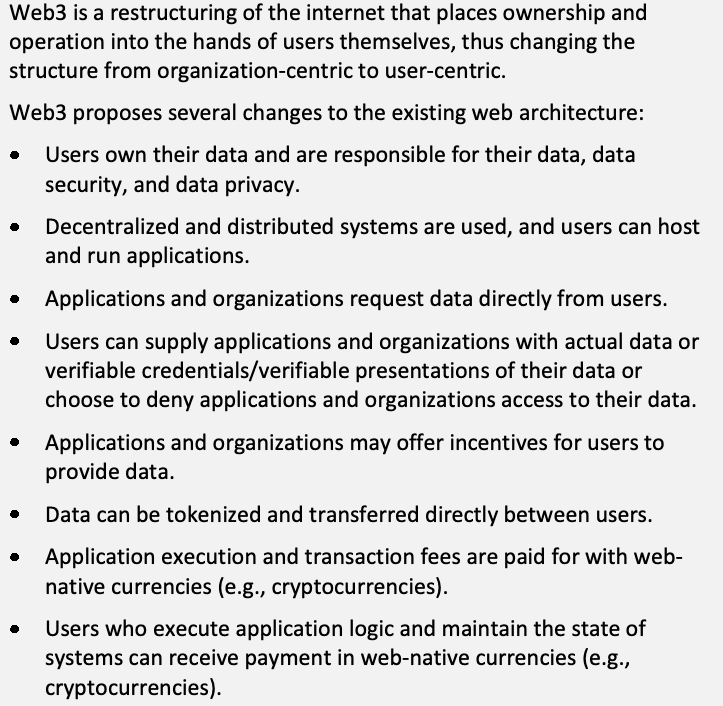
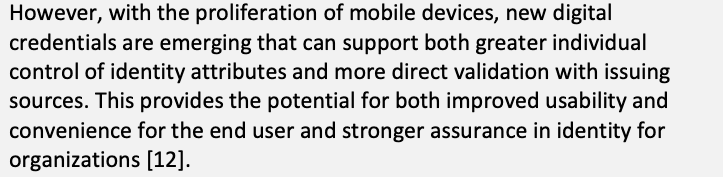
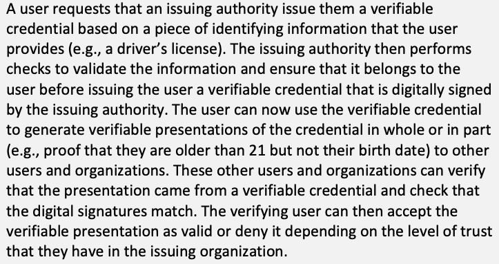
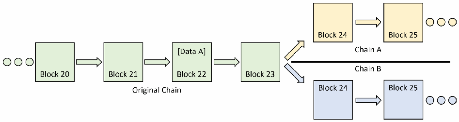
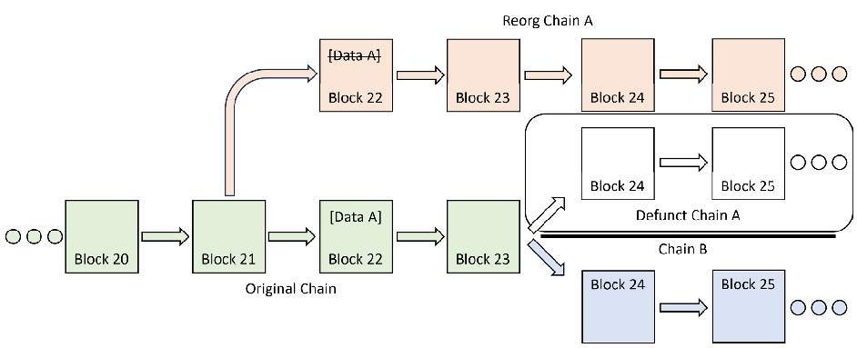

NIST IR 8475 日本語訳
英語タイトル : A Security Perspective on the Web3 Paradigm日本語タイトル : Web3 パラダイムのセキュリティの観点
公開日 : 2025-02-25
原文URL : https://csrc.nist.gov/pubs/ir/8475/final
翻訳編集 : 自動生成（有志による非公式の日本語訳）, 原文取得日 : 2026-10-31, 訳文 : 278 / 279 ブロック
[要約] NIST IR 8475 は、インターネットの将来像として提案されている Web3 の高レベルな技術的概要を示し、それを実現するために提案されている技術について論じる文書です。Web3 では、ユーザーが自らの個人データを所有・管理し、システムは分散化・分散配置され、デジタルトークンが資産を表すために使われ、ウェブネイティブな通貨が支払いに使われます。これらの発展途上の技術を統合すると新たなセキュリティ上の課題が生じる可能性があるため、Web3 技術とその採用を検討する際に取り組むべきセキュリティ上の考慮事項を示します。背景としてウェブの変遷を整理し、Web3 のビジョン、データ、技術コンポーネントを概観したうえで、分散型エコシステムにおける信頼と詐欺、データの永続性、可用性、プライバシーなどのセキュリティとプライバシーの論点を扱います。
NIST Internal Report
NIST内部報告書
NIST IR 8475
NIST IR 8475
A Security Perspective on the Web3 Paradigm
Web3パラダイムに関するセキュリティの視点
Dylan Yaga Peter Mell
Dylan Yaga Peter Mell
This publication is available free of charge from: https://doi.org/10.6028/NIST.IR.8475
この刊行物は次の場所から無料で入手できます。https://doi.org/10.6028/NIST.IR.8475
NIST Internal Report
NIST内部報告書
NIST IR 8475
NIST IR 8475
A Security Perspective on the Web3 Paradigm
Web3パラダイムに関するセキュリティの視点
Dylan Yaga Peter Mell
Dylan Yaga Peter Mell
Computer Security Division Information Technology Laboratory
コンピュータセキュリティ部門 情報技術研究所
This publication is available free of charge from: https://doi.org/10.6028/NIST.IR.8475
この刊行物は次の場所から無料で入手できます。https://doi.org/10.6028/NIST.IR.8475
February 2025
2025年2月
［米国商務省の紋章。公的な標章のため、この非公式サイトには掲載していません。原本 PDF を参照してください。］
U.S. Department of Commerce Howard W. Lutnick, Secretary
米国商務省 Howard W. Lutnick長官
National Institute of Standards and Technology
米国国立標準技術研究所
Craig Burkhardt, Acting Under Secretary of Commerce for Standards and Technology and Acting NIST Director
Craig Burkhardt、標準技術担当商務次官代行兼NIST所長代行
Certain commercial equipment, instruments, software, or materials, commercial or non-commercial, are identified in this paper in order to specify the experimental procedure adequately. Such identification does not imply recommendation or endorsement of any product or service by NIST, nor does it imply that the materials or equipment identified are necessarily the best available for the purpose.
実験手順を適切に特定するため、この論文では特定の市販の装置、機器、ソフトウェア、材料(商用・非商用を問わない)を示しています。このように示すことは、NISTがいかなる製品やサービスも推奨または支持していることを意味せず、示された材料や装置がその目的に最適であるとも限りません。
There may be references in this publication to other publications currently under development by NIST in accordance with its assigned statutory responsibilities. The information in this publication, including concepts and methodologies, may be used by federal agencies even before the completion of such companion publications. Thus, until each publication is completed, current requirements, guidelines, and procedures, where they exist, remain operative. For planning and transition purposes, federal agencies may wish to closely follow the development of these new publications by NIST.
この刊行物は、法令で定められた責務に従ってNISTが現在策定中の他の刊行物に言及している場合があります。概念や方法論を含む本刊行物の情報は、そうした関連刊行物が完成する前であっても、連邦機関が利用してもよいです。したがって、それぞれの刊行物が完成するまでは、現行の要件、ガイドライン、手順が存在する場合には、それらが引き続き有効です。計画と移行のため、連邦機関はNISTによるこれらの新しい刊行物の策定状況を注意深く見守ってもよいです。
Organizations are encouraged to review all draft publications during public comment periods and provide feedback to NIST. Many NIST cybersecurity publications, other than the ones noted above, are available at https://csrc.nist.gov/publications.
組織は、パブリックコメント期間中にすべてのドラフト刊行物を確認し、NISTにフィードバックを提供することが推奨されます。上記以外にも、NISTの多くのサイバーセキュリティ関連刊行物が https://csrc.nist.gov/publications で公開されています。
NIST Technical Series Policies
NISTテクニカルシリーズのポリシー
Copyright, Use, and Licensing Statements
著作権、使用およびライセンスに関する記述
NIST Technical Series Publication Identifier Syntax
NISTテクニカルシリーズ刊行物識別子の構文
Publication History
刊行履歴
Approved by the NIST Editorial Review Board on 2024-11-13
2024-11-13にNIST編集審査委員会が承認
How to Cite this NIST Technical Series Publication:
このNISTテクニカルシリーズ刊行物の引用方法
Yaga D, Mell PM (2025) A Security Perspective on the Web3 Paradigm. (National Institute of Standards and Technology, Gaithersburg, MD), NIST Interagency or Internal Report (IR) NIST IR 8475. https://doi.org/10.6028/NIST.IR.8475
Yaga D, Mell PM (2025) A Security Perspective on the Web3 Paradigm. (National Institute of Standards and Technology, Gaithersburg, MD), NIST Interagency or Internal Report (IR) NIST IR 8475. https://doi.org/10.6028/NIST.IR.8475
Author ORCID iDs
著者のORCID iD
Dylan Yaga: 0000-0003-4058-3645 Peter Mell: 0000-0003-2938-897X
Dylan Yaga: 0000-0003-4058-3645 Peter Mell: 0000-0003-2938-897X
Contact Information
連絡先
ir8475-comments@nist.gov
ir8475-comments@nist.gov
National Institute of Standards and Technology Attn: Computer Security Division, Information Technology Laboratory 100 Bureau Drive (Mail Stop 8930) Gaithersburg, MD 20899-8930
米国国立標準技術研究所 宛先：コンピュータセキュリティ部門、情報技術研究所 100 Bureau Drive（Mail Stop 8930）Gaithersburg, MD 20899-8930
Additional Information
追加情報
Additional information about this publication is available at https://csrc.nist.gov/pubs/ir/8475/final, including related content, potential updates, and document history.
この刊行物に関する追加情報(関連コンテンツ、更新の可能性、変更履歴を含む)は https://csrc.nist.gov/pubs/ir/8475/final で入手できます。
All comments are subject to release under the Freedom of Information Act (FOIA).
すべてのコメントは、情報公開法（FOIA）に基づく公開の対象となります。
Abstract
概要
Web3 is a proposed vision for the future of the internet that is restructured to be more user-centric with an emphasis on decentralized data. Users would own and manage their personal data, and systems would be decentralized and distributed. Digital tokens would be used to represent assets, and web-native currencies (e.g., cryptocurrencies) would be used for payments. This document provides a high-level technical overview of Web3 and discusses proposed technologies to implement it. The integration of these developing technologies may present novel security challenges, so this paper presents security considerations that should be addressed when considering Web3 technology and adoption.
Web3は、インターネットの将来像として提案されているビジョンで、ユーザー中心の度合いを高め、データの分散化を重視する形に再構成されたインターネットを指します。ユーザーは自らの個人データを所有・管理し、システムは分散化・分散配置されます。デジタルトークンは資産を表すために使われ、ウェブネイティブな通貨(暗号資産など)は支払いに使われます。この文書は、Web3の高レベルな技術的概要を示し、それを実現するために提案されている技術について論じます。これらの発展途上の技術を統合すると、新たなセキュリティ上の課題が生じる可能性があるため、この文書では、Web3技術とその採用を検討する際に取り組むべきセキュリティ上の考慮事項を示します。
Keywords
キーワード
blockchain; cryptocurrency; data; decentralized; decentralized identity; non-fungible tokens; smart contracts; tokens; Web3.
ブロックチェーン、暗号資産、データ、分散型、分散型アイデンティティ、非代替性トークン、スマートコントラクト、トークン、Web3。
Reports on Computer Systems Technology
コンピュータシステム技術に関する報告書
The Information Technology Laboratory (ITL) at the National Institute of Standards and Technology (NIST) promotes the U.S. economy and public welfare by providing technical leadership for the Nation’s measurement and standards infrastructure. ITL develops tests, test methods, reference data, proof of concept implementations, and technical analyses to advance the development and productive use of information technology. ITL’s responsibilities include the development of management, administrative, technical, and physical standards and guidelines for the cost-effective security and privacy of other than national security-related information in federal information systems.
米国国立標準技術研究所（NIST）の情報技術研究所（ITL）は、国の測定・標準インフラに技術的なリーダーシップを提供することで、米国経済と公共の福祉を促進しています。ITLは、情報技術の発展と生産的な活用を進めるため、試験、試験方法、参照データ、概念実証の実装、技術分析を開発しています。ITLの責務には、連邦情報システムにおける国家安全保障関連以外の情報のセキュリティとプライバシーを費用対効果の高い方法で確保するための、管理、管理上、技術、物理面の標準およびガイドラインを策定することが含まれます。
Audience
想定読者
This publication is designed for readers with little or no knowledge of Web3 technology who wish to understand how it works at a high level. It is not intended to be a technical guide. The discussion of the technology provides a conceptual understanding, and some examples, figures, and tables are simplified to fit the audience.
この刊行物は、Web3技術についての知識がほとんど、あるいはまったくなく、その仕組みを高いレベルで理解したい読者を対象としています。技術ガイドとなることは意図していません。技術の説明は概念的な理解を提供するものであり、一部の例、図、表は読者に合わせて簡略化しています。
Patent Disclosure Notice
特許開示に関する通知
NOTICE: ITL has requested that holders of patent claims whose use may be required for compliance with the guidance or requirements of this publication disclose such patent claims to ITL. However, holders of patents are not obligated to respond to ITL calls for patents and ITL has not undertaken a patent search in order to identify which, if any, patents may apply to this publication.
通知: ITLは、この刊行物のガイダンスまたは要件への準拠に使用が必要となる可能性のある特許請求の範囲の保有者に対し、その特許請求の範囲をITLに開示するよう求めています。ただし、特許の保有者はITLによる特許の募集に応答する義務を負わず、ITLは、この刊行物に適用される特許があるとすればそれがどれであるかを特定するための特許調査を行っていません。
As of the date of publication and following call(s) for the identification of patent claims whose use may be required for compliance with the guidance or requirements of this publication, no such patent claims have been identified to ITL.
刊行日の時点で、この刊行物のガイダンスまたは要件への準拠に使用が必要となる可能性のある特許請求の範囲を特定するための募集を行った結果、そのような特許請求の範囲はITLに特定されていません。
No representation is made or implied by ITL that licenses are not required to avoid patent infringement in the use of this publication.
この刊行物の使用にあたり、特許侵害を避けるためにライセンスが不要であることを、ITLが表明または示唆するものではありません。
Table of Contents
目次
List of Tables
表の一覧
List of Figures
図の一覧
Author Contributions
著者の貢献
Author 1: Conceptualization, Investigation, Writing – Original draft
著者1: 着想、調査、執筆(原案)
Author 2: Writing – Original draft
著者2: 執筆(原案)
1. Introduction
1. はじめに
Web3 is a proposed vision for the future of the internet. It is not a specific single-design, architecture, or software but rather a goal for restructuring the internet to be more user-centric. User responsibility would increase greatly since users would own and manage their own personal data, acting as gatekeepers to other applications and services that need it. Users would be responsible for the accuracy and verifiability of their data, ensuring their own continued access to systems through usable and robust systems of authentication, and ensuring their ability to restore access to their own data. Web3 systems would be implemented in a decentralized and distributed manner while also providing for direct user participation. Digital tokens would be used to represent assets, and web-native currencies (e.g., cryptocurrencies) would be used for payments.
Web3は、インターネットの将来像として提案されているビジョンです。特定の単一の設計、アーキテクチャ、ソフトウェアではなく、インターネットをよりユーザー中心になるよう再構成するという目標です。ユーザーは自らの個人データを所有・管理し、それを必要とする他のアプリケーションやサービスに対するゲートキーパーとして振る舞うため、ユーザーの責任は大きく増します。ユーザーは、データの正確性と検証可能性に責任を負い、使いやすく堅牢な認証の仕組みによって自らのシステムへの継続的なアクセスを確保し、自らのデータへのアクセスを復元できるようにする責任も負います。Web3のシステムは、分散型かつ分散配置の形で実装されつつ、ユーザーの直接的な参加も可能にします。デジタルトークンは資産を表すために使われ、ウェブネイティブな通貨(暗号資産など)は支払いに使われます。
This document provides a high-level technical overview of Web3 and its various technologies and proposed components. Many of these technologies already exist in different stages of technical maturity. The concrete work in Web3 is largely in maturing these technologies and integrating them to create something greater than the sum of its parts. This integration may present novel security challenges, so this paper uses its Web3 technical description to present security considerations for Web3 technology and adoption.
この文書は、Web3とその各種技術、および提案されている構成要素の高レベルな技術的概要を示します。これらの技術の多くは、すでに技術的な成熟度の異なる段階で存在しています。Web3における具体的な作業の大部分は、これらの技術を成熟させ、統合して、部分の総和を超えるものを作り出すことです。この統合は新たなセキュリティ上の課題を生じさせる可能性があるため、この論文では、Web3の技術的な説明をもとに、Web3技術とその採用に関するセキュリティ上の考慮事項を示します。
Opinions and evaluations of the utility and feasibility of the Web3 vision are out of scope for this document, which takes no position on whether the Web3 vision can or should be implemented. For readers who are interested in learning about the case for Web3 adoption, a variety of resources are available [1][2][3]. This paper does not delve into the philosophies held by some Web3 proponents and does not take a position on them.
Web3のビジョンの有用性や実現可能性についての意見や評価は、この文書の対象外であり、この文書は、Web3のビジョンを実装できるか、実装すべきかについて、いかなる立場もとりません。Web3の採用を支持する論拠を知りたい読者のために、さまざまな資料が公開されています[1][2][3]。この論文は、Web3の支持者の一部が抱く思想には踏み込まず、それらについて立場をとることもしません。
The remainder of this document is organized as follows:
この文書の以降の構成は次のとおりです。
•Section 2 provides a short history of the internet through a discussion of its early generations: Web 1.0 and Web 2.0.
•第2節では、インターネットの初期の世代であるWeb 1.0とWeb 2.0を論じることで、インターネットの短い歴史を示します。
•Section 3 discusses the vision for Web3 and its technical components.
•第3節では、Web3のビジョンとその技術コンポーネントを論じます。
•Section 4 considers the potential security and privacy issues that may arise.
•第4節では、生じうるセキュリティとプライバシーの問題を検討します。
•Section 5 provides a conclusion.
•第5節では、結論を示します。
2. Background
2. 背景
The internet can be viewed in terms of “generations” of capabilities. These generations are often divided into the nascent Web 1.0, the current Web 2.0 [4], and a conceptual next generation Web 3 (named Web3). This section provides an overview of Web 1.0 and Web 2.0. It concludes with a brief discussion of a separate concept called Web 3.0, which embodies a different vision than Web3 (while unfortunately sharing a similar name). This context is provided to highlight where Web3 diverges from the existing web and differs from the separately envisioned Web 3.0.
インターネットは、機能の「世代」という観点から捉えることができます。これらの世代は、黎明期のWeb 1.0、現在のWeb 2.0[4]、そして概念上の次世代であるWeb 3(Web3と呼ばれる)に分けられることが多くあります。この節では、Web 1.0とWeb 2.0の概要を示します。最後に、Web 3.0という別の概念について簡単に論じます。Web 3.0はWeb3とは異なるビジョンを体現しています(残念ながら名称は似ています)。この背景は、Web3が既存のウェブとどこで分かれるか、また、別に構想されたWeb 3.0とどう異なるかを際立たせるために示します。
2.1. Web 1.0 — The Nascent Web
2.1. Web 1.0 — 黎明期のウェブ
Between the late 1980s and early 2000s, the internet hosted very basic websites that were mostly comprised of text (often just plain text but sometimes with simple formatting), images, and hyperlinks to other webpages. As a result, this era has since been dubbed the “static” or “read-only” web. Most websites were hosted by large organizations, government agencies, internet service providers, or tech-savvy users who were allotted a small portion of web storage from their internet service provider or other web-hosting provider to develop their own “home page.” Websites eventually began to create more designs and styles via Hypertext Markup Language (HTML) tables, which allowed developers to change the format of their page.
1980年代後半から2000年代初頭にかけて、インターネット上にあったのは、主にテキスト(多くはプレーンテキストですが、簡単な書式が付くこともありました)、画像、他のウェブページへのハイパーリンクから成る、ごく基本的なウェブサイトでした。そのため、この時代は「静的」または「読み取り専用」のウェブと呼ばれるようになりました。ウェブサイトの大半は、大組織、政府機関、インターネットサービスプロバイダー、あるいは、自分の「ホームページ」を作るためにインターネットサービスプロバイダーやその他のウェブホスティング事業者からウェブストレージの一部を割り当てられた、技術に詳しいユーザーによってホストされていました。やがてウェブサイトは、HTML(Hypertext Markup Language)のテーブルを使ってより多くのデザインやスタイルを作り出すようになり、開発者はページの書式を変更できるようになりました。
During this period, there were also some “dynamic” pages on the web that used the Common Gateway Interface (CGI) to execute code on the server and generate a static webpage to be delivered to the end user. There were little to no client-side manipulatable websites. Online communications were done through email, bulletin boards, and forums, and there was almost no online shopping. Since there was not a lot of user interaction, organizations did not host massive amounts of user data.
この時期には、CGI(Common Gateway Interface)を使ってサーバー上でコードを実行し、エンドユーザーに配信する静的なウェブページを生成する「動的」ページも、ウェブ上に一部ありました。クライアント側で操作できるウェブサイトはほとんどありませんでした。オンラインでのやり取りは、メール、掲示板、フォーラムを通じて行われ、オンラインショッピングはほぼありませんでした。ユーザーとのやり取りが多くなかったため、組織が大量のユーザーデータをホストすることはありませんでした。
2.2. Web 2.0 — The Current Web
2.2. Web 2.0 — 現在のウェブ
As the internet grew in the early to mid-2000s, so too did the number of use cases for it. Web servers continued to gain features and integrate more technologies, such as databases. The user interface of the internet — the web browser — also continued to evolve and gain new features. The development of multiple browsers gave users more freedom of choice.
インターネットが2000年代前半から半ばにかけて成長するにつれて、その利用事例も増えました。ウェブサーバーは機能を増やし続け、データベースなどのより多くの技術を統合していきました。インターネットのユーザーインターフェースであるウェブブラウザも、進化を続け、新しい機能を獲得していきました。複数のブラウザが開発されたことで、ユーザーの選択の自由が広がりました。
Developers also found new methods for user interaction. In the beginning, these methods were largely closed source or proprietary technologies (e.g., Adobe Flash, Microsoft Silverlight, JAVA Applets) but eventually migrated to standardized and open-source technologies (e.g., HTML 5, JavaScript, and utilizing Document Object Model [DOM] manipulation). Communication methods expanded from forums and email to chatting, messaging, and social media. Many active web users also saw their “web presence” migrate through several genres over the lifespan of Web 2.0 — from personal home pages to online web journals and burgeoning social media platforms, such as MySpace, to more modern social media platforms, such as Facebook and Twitter [5]. The web also became more media rich as it evolved, creating spaces for sharing images and videos (e.g., Instagram, YouTube, and TikTok).
開発者は、ユーザーとやり取りするための新しい方法も見いだしました。当初、これらの方法の大半はクローズドソースまたは独自の技術(Adobe Flash、Microsoft Silverlight、JAVA Appletなど)でしたが、やがて標準化されたオープンソースの技術(HTML 5、JavaScript、Document Object Model [DOM]の操作の利用など)へ移行しました。コミュニケーションの手段は、フォーラムやメールから、チャット、メッセージング、ソーシャルメディアへと広がりました。ウェブを活発に利用していた多くのユーザーは、Web 2.0の期間を通じて、自らの「ウェブ上の存在」がいくつかのジャンルを移り変わっていくのも経験しました。個人のホームページから、オンラインのウェブ日誌、MySpaceのような急成長中のソーシャルメディアプラットフォームを経て、FacebookやTwitterのようなより現代的なソーシャルメディアプラットフォームへと移っていったのです[5]。ウェブは進化するにつれて、メディアも豊かになり、画像や動画を共有する場(Instagram、YouTube、TikTokなど)が生まれました。
The development of websites also saw a major leap by splitting style and content into two portions. Style is now largely handled by Cascading Style Sheets (CSS), and content is handled by webpages. Developers no longer embed tables within tables to achieve specific designs. This split has allowed for easier manipulation of content on the client side. This era of the internet was dubbed the “interactive,” “participative,” or “social” web since websites became more interactive and responsive to user input, and users migrated toward social media websites.
ウェブサイトの開発も、スタイルとコンテンツを2つの部分に分けることで大きく飛躍しました。現在では、スタイルの大部分をCSS(Cascading Style Sheets)が扱い、コンテンツはウェブページが扱います。開発者は、特定のデザインを実現するためにテーブルの中にテーブルを埋め込むことはもうありません。この分離により、クライアント側でのコンテンツの操作が容易になりました。ウェブサイトがよりインタラクティブになってユーザーの入力に応答するようになり、ユーザーがソーシャルメディアのウェブサイトへ移っていったため、この時代のインターネットは、「インタラクティブ」、「参加型」、「ソーシャル」ウェブと呼ばれるようになりました。
There was a significant growth of organizations offering multiple interconnected services (e.g., Google’s Gmail and Drive, Microsoft’s Hotmail/Outlook and OneDrive, Apple’s iCloud) free of charge. Eventually, these organizations became hosts to massive amounts of user data.
相互に接続された複数のサービス(GoogleのGmailとDrive、MicrosoftのHotmail/OutlookとOneDrive、AppleのiCloudなど)を無料で提供する組織が大きく増えました。やがてこれらの組織は、大量のユーザーデータのホストとなりました。
As mobile devices advanced in power and pervasiveness, organizations could collect significant data from them, and as the world began to “make an app” out of online services, organizations realized that they could get more data from a smartphone than a website. Through smartphones, organizations had access to a myriad of sensor data, geolocation data, contact information, and stored media, all of which was made accessible through application permission requests.
モバイルデバイスの性能と普及が進むにつれて、組織はそこから大量のデータを収集できるようになりました。世の中がオンラインサービスを「アプリ化」し始めると、組織は、ウェブサイトよりもスマートフォンからのほうが多くのデータを得られることに気づきました。スマートフォンを通じて、組織は、無数のセンサーデータ、位置情報データ、連絡先情報、保存されたメディアにアクセスできるようになり、そのすべてがアプリケーションの権限要求を通じてアクセス可能になりました。
As organizations continued to expand and collect user data, they also began to diversify their offerings. Many opened online storefronts that allowed users to purchase licenses to view digital media, such as music, books, and films.1 Users could not easily migrate away from individual platforms since their licenses were specific to that platform. Some users found out too late that if they were removed from an organization’s platform, they lost all access to the media for which they had purchased licenses [6]. In many cases, users were unable to return digital content that they were unhappy with or transfer digital content to other users (either a temporary transfer, such as lending to another user, or a permanent transfer, such as selling a digital item to another user). This change from the ownership of physical items to licenses to view digital content was seen by many as a step backwards. Proponents of Web3 saw the mass collection of user data, platform lock-in, and the inability to obtain and transfer the ownership of digital items as issues with Web 2.0.
組織は、拡大を続けてユーザーデータを収集するうちに、提供するサービスも多様化させ始めました。多くが、音楽、書籍、映画などのデジタルメディアを閲覧するライセンスをユーザーが購入できるオンラインストアを開設しました。1ライセンスは個々のプラットフォームに固有のものであったため、ユーザーは、特定のプラットフォームから容易に移行できませんでした。組織のプラットフォームから排除されると、ライセンスを購入したメディアにまったくアクセスできなくなることに、後になって気づいたユーザーもいます[6]。多くの場合、ユーザーは、気に入らなかったデジタルコンテンツを返品することも、デジタルコンテンツを他のユーザーに移転すること(他のユーザーへの貸与のような一時的な移転も、デジタルアイテムを他のユーザーに売却するような恒久的な移転も)もできませんでした。物理的な品物の所有から、デジタルコンテンツを閲覧するライセンスへのこの変化は、多くの人に後退と受け止められました。Web3の支持者は、ユーザーデータの大量収集、プラットフォームへの囲い込み、デジタルアイテムの所有権を取得・移転できないことを、Web 2.0の問題とみなしました。
2.3. Web3 vs. Web 3.0 — The “Semantic” Web
2.3. Web3とWeb 3.0 — 「セマンティック」ウェブ
Web 3.0 is different from Web3, though they share a similar name. Web 3.0 is known as the “semantic” web. It is an effort to make the internet more machine-readable by adding additional metadata, such as tags and identifiers, to data hosted on websites. These tags would enable computers to process web data and allow for data to be shared and reused across different applications more easily. By utilizing specific tags, users can find similar resources that use the same tags instead of needing a direct hyperlink between the two sources. This change allows for faster discoverability of data. Currently, the Semantic Web has not reached widespread adoption or use. Some cite a lack of incentives for web developers to implement the technology as well as usability concerns with the development tools [7][8].
Web 3.0はWeb3とは異なりますが、名称は似ています。Web 3.0は「セマンティック」ウェブとして知られています。これは、ウェブサイトにホストされているデータにタグや識別子などの追加のメタデータを加えることで、インターネットをより機械可読にしようとする取り組みです。これらのタグにより、コンピュータがウェブのデータを処理できるようになり、データを異なるアプリケーション間でより容易に共有・再利用できるようになります。特定のタグを利用することで、ユーザーは、2つの情報源の間に直接のハイパーリンクがなくても、同じタグを使う類似のリソースを見つけられます。この変化により、データをより速く発見できるようになります。現在のところ、セマンティックウェブは広く採用・利用されるには至っていません。ウェブ開発者がこの技術を実装するインセンティブがないことや、開発ツールのユーザビリティに関する懸念を理由に挙げる人もいます[7][8]。
2.4. The Future of the Web
2.4. ウェブの未来
The internet is constantly under development, and its direction is in flux. New technologies may be adopted wholesale, integrated into architecture, or rejected entirely based on a variety of factors, including business and consumer needs.
インターネットは絶えず開発が進められており、その方向性は流動的です。新しい技術は、ビジネスや消費者のニーズなどのさまざまな要因に基づいて、全面的に採用されることも、アーキテクチャに統合されることも、まったく採用されないこともあります。
There is no guarantee that any technology discussed here will be widely adopted, and this paper refrains from giving opinions on whether these technologies should be used, adopted, or ignored.
ここで論じるどの技術も広く採用される保証はなく、この論文は、これらの技術を使用すべきか、採用すべきか、無視すべきかについて意見を述べることを控えます。
3. Web3 Overview
3. Web3の概要
This section provides an overview of Web3. It discusses the Web3 vision, data model, and technological components and concludes with a discussion of Web3 benefits and challenges.
この節では、Web3の概要を示します。Web3のビジョン、データモデル、技術コンポーネントを論じ、Web3の利点と課題の議論で締めくくります。
3.1. Web3 Vision
3.1. Web3のビジョン
The definition provided below is intended to be descriptive and inclusive of all Web3 applications. It is not intended to define what is or what is not part of Web3, nor is it intended to limit future Web3 applications. The purpose of the definition and resultant characteristics is to enable the reader to understand the current proposed technology and to provide a foundation for an exploration of potential security and privacy issues.
以下に示す定義は、すべてのWeb3アプリケーションを包含する記述的なものとして意図されています。何がWeb3に含まれ、何が含まれないかを定義するものではなく、将来のWeb3アプリケーションを制限するものでもありません。定義とそこから導かれる特性の目的は、読者が現在提案されている技術を理解できるようにするとともに、生じうるセキュリティとプライバシーの問題を探るための土台を提供することです。
Web3 is a restructuring of the internet that places ownership and operation into the hands of users themselves, thus changing the structure from organization-centric to user-centric.
原本PDFの抜粋画像

Web3とは、所有と運用をユーザー自身の手に委ねることで、構造を組織中心からユーザー中心へと変えるインターネットの再構成です。
Web3 proposes several changes to the existing web architecture:
Web3は、既存のウェブアーキテクチャにいくつかの変更を提案しています。
•Users own their data and are responsible for their data, data security, and data privacy.
•ユーザーは自らのデータを所有し、データ、データのセキュリティ、データのプライバシーに責任を負います。
•Decentralized and distributed systems are used, and users can host and run applications.
•分散型かつ分散配置のシステムが使われ、ユーザーはアプリケーションをホストして実行できます。
•Applications and organizations request data directly from users.
•アプリケーションと組織は、ユーザーに直接データを要求します。
•Users can supply applications and organizations with actual data or verifiable credentials/verifiable presentations of their data or choose to deny applications and organizations access to their data.
•ユーザーは、アプリケーションと組織に、実際のデータ、またはデータの検証可能な資格情報や検証可能なプレゼンテーションを提供することも、アプリケーションと組織によるデータへのアクセスを拒否することもできます。
•Applications and organizations may offer incentives for users to provide data.
•アプリケーションと組織は、ユーザーがデータを提供することに対してインセンティブを提供する場合があります。
•Data can be tokenized and transferred directly between users.
•データはトークン化して、ユーザー間で直接移転できます。
•Application execution and transaction fees are paid for with web-native currencies (e.g., cryptocurrencies).
•アプリケーションの実行とトランザクションの手数料は、ウェブネイティブな通貨(暗号資産など)で支払われます。
•Users who execute application logic and maintain the state of systems can receive payment in web-native currencies (e.g., cryptocurrencies).
•アプリケーションのロジックを実行し、システムの状態を維持するユーザーは、ウェブネイティブな通貨(暗号資産など)で支払いを受けられます。
This description leads to several characteristics of Web3, which are documented in Table 1.
この記述から、Web3のいくつかの特性が導かれます。それらは表1にまとめています。
Table 1. Web3 characteristics
表1 Web3の特性
| Characteristic | Description |
|---|---|
| Data Ownership | Web3 seeks to have users own their data. This can enable the portability of data and the transfer of data ownership. Users will need to securely store their data and manage requests for their data. Users will be able to determine the level of security to place on their data, as well as where, when, how, how long, and with whom they share their data. |
| Decentralized | Web3 is envisioned to be operated by those who use it and provide an infrastructure that anyone can build upon through blockchain technology. See [9] for more information on blockchain technology. |
| Distributed | Web3 applications are envisioned to be deployed across the Web3 infrastructure and executed by multiple users with smart contracts deployed on a blockchain. See [9] Section 6, entitled “Smart Contracts,” for more information. |
| Verifiable Credentials and Verifiable Presentations | Web3 users can either provide information directly or utilize verifiable credentials to prove information without providing the underlying data. World Wide Web Consortium (W3C) has a Verifiable Credentials Model that can provide verifiable credentials and verifiable presentations [10]. |
| Incentives | Since users may be reluctant to give data away, organizations that require users’ data may provide additional incentives, such as digital asset (e.g., tokens or cryptocurrency) or expanded application capabilities. Users may also choose and be incentivized to maintain the integrity of the networks, verify transactions, and execute applications. |
| Tokenization and Digital Assets | Web3 is envisioned to rely on both fungible and non-fungible tokens to represent data and digital assets that can be exchanged between users. |
| Web-Native Currency and Cryptocurrency | Web3 is envisioned to use web-native currencies (e.g., cryptocurrency) as the basis for purchases, money exchanges between users, and the costs of executing distributed applications. |
| 特性 | 説明 |
|---|---|
| データの所有権 | Web3は、ユーザーが自らのデータを所有することを目指しています。これにより、データのポータビリティとデータの所有権の移転が可能になります。ユーザーは、データを安全に保管し、データに対する要求を管理する必要があります。 ユーザーは、データに適用するセキュリティのレベルのほか、データを共有する場所、時期、方法、期間、相手を決められるようになります。 |
| 分散型 | Web3は、利用する人々によって運用され、ブロックチェーン技術を通じて誰もがその上に構築できるインフラを提供するものと構想されています。ブロックチェーン技術の詳細は[9]を参照してください。 |
| 分散型配置 | Web3のアプリケーションは、Web3のインフラ全体に展開され、ブロックチェーン上に展開されたスマートコントラクトを用いて複数のユーザーによって実行されるものと構想されています。詳細は[9]の第6節「Smart Contracts」を参照してください。 |
| 検証可能な資格情報と検証可能なプレゼンテーション | Web3のユーザーは、情報を直接提供することも、検証可能な資格情報を利用して、元になるデータを提供せずに情報を証明することもできます。World Wide Web Consortium(W3C)には、検証可能な資格情報と検証可能なプレゼンテーションを提供できるVerifiable Credentials Modelがあります[10]。 |
| インセンティブ | ユーザーはデータを手放すことに消極的な場合があるため、ユーザーのデータを必要とする組織は、デジタル資産(トークンや暗号資産など)やアプリケーション機能の拡張といった追加のインセンティブを提供する場合があります。ユーザーは、ネットワークの完全性の維持、トランザクションの検証、アプリケーションの実行を選択し、そのためのインセンティブを得ることもあります。 |
| トークン化とデジタル資産 | Web3は、ユーザー間で交換できるデータとデジタル資産を表すために、代替性トークンと非代替性トークンの両方に依拠するものと構想されています。 |
| ウェブネイティブな通貨と暗号資産 | Web3は、購入、ユーザー間の金銭のやり取り、分散型アプリケーションの実行コストの基盤として、ウェブネイティブな通貨(暗号資産など)を使用するものと構想されています。 |
3.2. Web3 Data
3.2. Web3のデータ
Implementing the proposed vision of Web3 would require changes to data, data ownership, data location, and data access. Currently, much of the internet’s data is proprietary, highly application-specific, and non-interoperable. In most cases, even user data are owned by the organization that provides the platform rather than the user. Table 2 describes and compares the current data model with the proposed Web3 data model.
提案されているWeb3のビジョンを実装するには、データ、データの所有、データの所在、データへのアクセスを変える必要があります。現在、インターネット上のデータの多くは独自のもので、アプリケーション固有の度合いが高く、相互運用できません。ほとんどの場合、ユーザーのデータでさえ、ユーザーではなく、プラットフォームを提供する組織が所有しています。表2は、現在のデータモデルと、提案されているWeb3のデータモデルを説明し、比較しています。
Table 2. Current web data model vs. Web3 data model
表2 現在のウェブのデータモデルとWeb3のデータモデルの比較
| Data Aspect | Current Model | Web3 Model |
|---|---|---|
| Data | While there are many standardized data formats for various media (e.g., images, sound, video), non-media data are largely application-specific. Interoperability between applications is cumbersome and often requires data translation and transformations. Often, a loss of data or data precision occurs. | Open standardized data formats for non-media data would allow for interoperability between organizations and greater user freedom. Some data can be replaced by verifiable credentials and verifiable presentations to help preserve private information. |
| Data Ownership | Most user data is owned by organizations. End-user agreement documents generally limit the rights of users over the data within applications. Users typically cannot give, trade, or sell their data to other users. While many organizations have a “Data Export” feature in their applications, few have a “Data Import” feature, meaning that the data themselves are tightly bound to the application that created it. Data can also be perfectly copied an infinite number of times, meaning that there is no scarcity of the data, and provenance is quickly obscured. | Most user data is owned by users. Data ownership can be proven through the use of digital signatures. For private information, users can elect to use trusted third parties to create verifiable credentials so that the information remains private, but external organizations can obtain the results. For organizations that need access to private data, users can elect to allow access (e.g., stored off a blockchain in a secure data hub or with a decentralized cloud service) at a granular level. Access to these data can be revoked after a set period or at the user’s discretion. Data themselves can be tokenized on a blockchain, which allows for the transfer of ownership and provides full provenance. |
| Data Location | Data are stored by the organization within databases that consist of many users’ data. User data are also redundantly contained across multiple different applications, as each one needs to maintain its own copy of user data, resulting in users needing to update each application whenever data changes. | Public data and verifiable credentials/verifiable presentations are posted on a blockchain. For large data, it may be necessary to utilize a decentralized online storage location with pointers to it posted on a blockchain [11]. Private information is stored on an external secure data hub. |
| Data Access | Data contained within applications can be accessed, modified, removed, transferred, sold, or monetized at any time without user knowledge. | Public data that are stored on the blockchain itself are easily accessible by anyone. Data that are stored outside of the blockchain may require additional authorization to access. This authorization is done by the user and can be managed at a granular level (as opposed to wholesale access to all data) that is application specific. Access to data stored outside of the blockchain can be revoked after a set period or at the user’s discretion. |
| データの側面 | 現在のモデル | Web3のモデル |
|---|---|---|
| データ | さまざまなメディア(画像、音声、動画など)向けの標準化されたデータ形式は数多くありますが、メディア以外のデータの大半はアプリケーション固有です。 アプリケーション間の相互運用は面倒で、データの変換や加工が必要になることがよくあります。データやデータの精度が失われることもしばしばあります。 | メディア以外のデータに対するオープンで標準化されたデータ形式があれば、組織間の相互運用が可能になり、ユーザーの自由度が高まります。 一部のデータは、検証可能な資格情報と検証可能なプレゼンテーションに置き換えて、プライベートな情報を保護しやすくできます。 |
| データの所有 | ユーザーデータの大半は組織が所有しています。 エンドユーザー契約の文書は、通常、アプリケーション内のデータに対するユーザーの権利を制限しています。ユーザーは、通常、自分のデータを他のユーザーに譲渡、取引、売却することはできません。 多くの組織はアプリケーションに「データのエクスポート」機能を備えていますが、「データのインポート」機能を備えているものはわずかであり、データ自体が、それを作成したアプリケーションに強く結び付けられていることを意味します。 データは無限回、完全に複製することもできるため、データに希少性はなく、出所はすぐに不明瞭になります。 | ユーザーデータの大半はユーザーが所有します。 データの所有は、デジタル署名を使って証明できます。 プライベートな情報については、ユーザーは信頼できる第三者を使って検証可能な資格情報を作成させることを選べます。これにより、情報は非公開のままで、外部の組織は結果を得ることができます。 プライベートなデータへのアクセスを必要とする組織に対して、ユーザーはきめ細かなレベルでアクセスを許可することを選べます（たとえば、安全なデータハブにブロックチェーン外で保管するか、分散型クラウドサービスを利用する方法があります）。これらのデータへのアクセスは、設定した期間の経過後、またはユーザーの判断で失効させることができます。 データ自体をブロックチェーン上でトークン化することもでき、これにより所有権の移転が可能になり、完全な来歴情報が得られます。 |
| データの所在 | データは、組織が、多数のユーザーのデータから成るデータベースの中に保管しています。 ユーザーデータは、複数の異なるアプリケーションにも重複して含まれています。各アプリケーションが独自のユーザーデータの写しを保持する必要があるため、ユーザーはデータが変わるたびに各アプリケーションを更新する必要があります。 | 公開データと、検証可能な資格情報や検証可能なプレゼンテーションは、ブロックチェーン上に投稿されます。 大きなデータについては、分散型のオンラインストレージの場所を利用し、そこへのポインタをブロックチェーン上に投稿する必要がある場合があります[11]。 プライベートな情報は、外部の安全なデータハブに保管されます。 |
| データへのアクセス | アプリケーション内に含まれるデータは、ユーザーに知られることなく、いつでもアクセス、変更、削除、移転、売却、収益化される可能性があります。 | ブロックチェーン自体に保管された公開データには、誰でも容易にアクセスできます。 ブロックチェーンの外に保管されたデータへのアクセスには、追加の認可が必要な場合があります。この認可はユーザーが行い、(すべてのデータへの一括したアクセスではなく)アプリケーション固有の、きめ細かなレベルで管理できます。 ブロックチェーンの外に保管されたデータへのアクセスは、設定した期間の経過後、またはユーザーの判断で失効させることができます。 |
3.3. Web3 Technology Components
3.3. Web3の技術コンポーネント
Like Web 1.0 and Web 2.0, Web3 is not a single technology. Rather, Web3 combines longstanding existing technologies and recent technological advancements to accomplish a specific set of goals. Web3 combines the use of mobile devices, new forms of digital identities, blockchains, tokens, smart contracts, and verifiable attestations of data. The discussion below is not comprehensive, and Web3 may use additional or alternative technologies.
Web 1.0やWeb 2.0と同様に、Web3は単一の技術ではありません。むしろWeb3は、古くからある既存の技術と最近の技術的進歩を組み合わせて、特定の一連の目標を達成するものです。Web3は、モバイルデバイス、新しい形のデジタルアイデンティティ、ブロックチェーン、トークン、スマートコントラクト、データの検証可能な証明の利用を組み合わせています。以下の議論は網羅的なものではなく、Web3は追加の技術や代替の技術を使う場合があります。
3.3.1. Existing Internet Technologies
3.3.1. 既存のインターネット技術
Web3 utilizes existing internet technologies that make up much of the current web architecture, such as Transmission Control Protocol/Internet Protocol (TCP/IP), remote procedure call (RPC), and Transport Layer Security (TLS). It can also use existing web services, servers, databases, and webpages to act as an interface. Web3 applications can be designed to interact with (as both input to and utilize output from) existing systems. Like blockchain systems and cryptocurrency systems, Web3 leverages well-known technologies, such as public-key cryptography, digital signatures, and cryptographic hashing algorithms.
Web3は、現在のウェブアーキテクチャの大部分を構成する既存のインターネット技術を利用します。たとえば、TCP/IP(Transmission Control Protocol/Internet Protocol)、リモートプロシージャコール(RPC)、TLS(Transport Layer Security)などです。また、既存のウェブサービス、サーバー、データベース、ウェブページをインターフェースとして使うこともできます。Web3のアプリケーションは、既存のシステムと(その入力として、また出力を利用する形で)やり取りするように設計できます。ブロックチェーンシステムや暗号資産システムと同様に、Web3は、公開鍵暗号、デジタル署名、暗号学的ハッシュアルゴリズムなど、よく知られた技術を活用します。
3.3.2. Mobile Technology
3.3.2. モバイル技術
Web3 can take advantage of the ever-growing access to mobile technology. Mobile devices are highly personal devices that often contain more personal information than personal computers or laptops (which may be shared by multiple people). Mobile devices are not typically shared among multiple users and have a one-to-one relationship between device and user. Modern mobile devices are often equipped with hardware security modules, trusted compute modules, and other modern security features. This scenario sets mobile devices up to be an ideal portal into Web3 technologies. Web3 allows users to take control of their digital identities, decide how others access their personal information, and revoke access at their discretion.
Web3は、ますます広がるモバイル技術へのアクセスを活用できます。モバイルデバイスは、非常に個人的なデバイスであり、多くの場合、(複数の人で共有されることがある)パーソナルコンピュータやノートPCよりも多くの個人情報を含んでいます。モバイルデバイスは、通常、複数のユーザーで共有されることはなく、デバイスとユーザーが1対1の関係にあります。現代のモバイルデバイスには、ハードウェアセキュリティモジュール、トラステッドコンピュートモジュール、その他の最新のセキュリティ機能が備わっていることが多くあります。このような状況から、モバイルデバイスはWeb3技術への理想的な入口となります。Web3により、ユーザーは自らのデジタルアイデンティティを管理し、他者による個人情報へのアクセスの方法を決め、自らの判断でアクセスを失効させることができます。
Related to this vision, the NIST National Cybersecurity Center of Excellence (NCCoE) is working with the Department of Homeland Security Science and Technology Directorate (DHS S&T) on a project to Accelerate the Adoption of Digital Identities on Mobile Devices [12].
このビジョンに関連して、NISTの国立サイバーセキュリティ卓越センター(NCCoE)は、国土安全保障省科学技術局(DHS S&T)と協力して、Accelerate the Adoption of Digital Identities on Mobile Devices [12]というプロジェクトに取り組んでいます。
The NCCoE effort describes the stage for mobile digital identities:
NCCoEの取り組みは、モバイルのデジタルアイデンティティの場を整えるものです。
However, with the proliferation of mobile devices, new digital credentials are emerging that can support both greater individual control of identity attributes and more direct validation with issuing sources. This provides the potential for both improved usability and convenience for the end user and stronger assurance in identity for organizations [12].
原本PDFの抜粋画像

しかし、モバイルデバイスの普及に伴い、個人によるアイデンティティ属性のより大きな管理と、発行元によるより直接的な検証の両方を支えられる新しいデジタル資格情報が登場しています。これにより、エンドユーザーにとってのユーザビリティと利便性の向上と、組織にとってのアイデンティティに対するより強い保証の両方が見込まれます[12]。
Governments around the world have been researching methods to expand existing forms of identity into the digital space. Proponents of Web3 call for the use of decentralized digital identities along with verifiable credentials. NIST has investigated multiple emerging blockchain identity management systems [13] that may be utilized by Web3 systems. By employing mobile devices and integrating different types of digital identities, Web3 can help facilitate an identity hub that can incorporate government-issued identities, decentralized identities, and other forms of digital identities.
世界各国の政府は、既存の形のアイデンティティをデジタル空間に拡張する方法を研究してきました。Web3の支持者は、検証可能な資格情報とともに、分散型のデジタルアイデンティティを使うことを主張しています。NISTは、Web3のシステムが利用しうる、複数の新興のブロックチェーンアイデンティティ管理システムを調査してきました[13]。モバイルデバイスを採用し、さまざまな種類のデジタルアイデンティティを統合することで、Web3は、政府発行のアイデンティティ、分散型アイデンティティ、その他の形のデジタルアイデンティティを取り込めるアイデンティティハブの実現を後押しできます。
3.3.3. Digital Identity and Verifiable Credentials
3.3.3. デジタルアイデンティティと検証可能な資格情報
As part of a digital identity, Web3 proposes the use of Decentralized Identifiers (DIDs) [14]. DIDs provide a method for a user to prove who they are, manage their own data, and interact with other users or services without the need for a central authority to verify or manage their identity. DIDs can be used on their own to identify people, organizations, and things. For example, a person could issue themselves a DID to act as a unique identifier to sign up for, log into, and use a Web3 social networking service. The person can prove ownership of their DID without divulging personal information.
Web3は、デジタルアイデンティティの一部として、分散型識別子(DID)の使用を提案しています[14]。DIDは、ユーザーが、自分が誰であるかを証明し、自らのデータを管理し、アイデンティティを検証または管理する中央機関を必要とせずに他のユーザーやサービスとやり取りするための方法を提供します。DIDは、単独で、人、組織、モノを識別するために使えます。たとえば、ある人が、Web3のソーシャルネットワーキングサービスに登録し、ログインし、利用するための一意の識別子として機能するDIDを、自分自身に発行できます。その人は、個人情報を明かすことなく、自らのDIDの所有を証明できます。
Web3 also plans to enable users to utilize verifiable credentials and verifiable presentations of their data [10]. Verifiable credentials and verifiable presentations allow users to own identifying information about themselves that has been verified by a third party. Users can choose to present a subset of the characteristics of their verifiable credentials to others by generating a verifiable presentation. Others can then verify that the information has been digitally signed by a third party and choose whether to trust that third party.
Web3はまた、ユーザーが自らのデータの検証可能な資格情報と検証可能なプレゼンテーションを利用できるようにすることも計画しています[10]。検証可能な資格情報と検証可能なプレゼンテーションにより、ユーザーは、第三者によって検証された自分自身の識別情報を所有できます。ユーザーは、検証可能なプレゼンテーションを生成することで、検証可能な資格情報の特性の一部を他者に提示することを選べます。他者は、その情報が第三者によってデジタル署名されたことを検証し、その第三者を信頼するかどうかを選べます。
With Web3, there may be an entire decentralized ecosystem of verifiable credential-issuing organizations with varying levels of trust among users. For example:
Web3では、ユーザー間で信頼の度合いが異なる、検証可能な資格情報を発行する組織から成る分散型エコシステム全体が存在する場合があります。たとえば、次のとおりです。
A user requests that an issuing authority issue them a verifiable credential based on a piece of identifying information that the user provides (e.g., a driver’s license). The issuing authority then performs checks to validate the information and ensure that it belongs to the user before issuing the user a verifiable credential that is digitally signed by the issuing authority. The user can now use the verifiable credential to generate verifiable presentations of the credential in whole or in part (e.g., proof that they are older than 21 but not their birth date) to other users and organizations. These other users and organizations can verify that the presentation came from a verifiable credential and check that the digital signatures match. The verifying user can then accept the verifiable presentation as valid or deny it depending on the level of trust that they have in the issuing organization.
原本PDFの抜粋画像

ユーザーは、自らが提供する識別情報(運転免許証など)をもとに、発行機関に対して検証可能な資格情報の発行を要求します。発行機関は、その情報を検証してユーザーのものであることを確認するためのチェックを行った後、発行機関がデジタル署名した検証可能な資格情報をユーザーに発行します。ユーザーは、この検証可能な資格情報を使って、資格情報の全体または一部(たとえば、生年月日ではなく、21歳より上であることの証明)の検証可能なプレゼンテーションを生成し、他のユーザーや組織に提示できます。これらの他のユーザーや組織は、プレゼンテーションが検証可能な資格情報から作られたことを検証し、デジタル署名が一致することを確認できます。検証するユーザーは、発行組織に対して抱いている信頼の度合いに応じて、その検証可能なプレゼンテーションを有効として受け入れることも、拒否することもできます。
3.3.4. Decentralized Systems and Smart Contracts
3.3.4. 分散システムとスマートコントラクト
Much of the discussion surrounding Web3 focuses on blockchains, tokens, and smart contracts. These newer technologies are key to the underlying architecture of Web3 and allow for many of the desired features to be realized. Blockchains allow for the system to be decentralized, which affords ownership of digital data. Tokens, as part of a blockchain, allow for data to be transferred rather than simply copied. Smart contracts allow for these systems to automate procedures, perform more complex transactions, and record the results on the blockchain itself.
Web3に関する議論の多くは、ブロックチェーン、トークン、スマートコントラクトに焦点を当てています。これらの比較的新しい技術はWeb3の基盤となるアーキテクチャの鍵であり、望まれる機能の多くを実現できるようにします。ブロックチェーンは、システムの分散化を可能にし、デジタルデータの所有を実現します。トークンは、ブロックチェーンの一部として、データを単に複製するのではなく、移転できるようにします。スマートコントラクトは、これらのシステムが手続きを自動化し、より複雑なトランザクションを実行し、その結果をブロックチェーン自体に記録できるようにします。
3.4. Web3 Discussion
3.4. Web3に関する考察
One of the main goals of Web3 is to change the data ownership model of the internet. Today, many users give up certain rights to the data they generate within applications and platforms as part of agreeing to the terms of use for the platform. The data that users generate are a valuable resource to each application, and the organizations that run those applications can use the data to generate additional revenue. The sale of user information — or even access to the user via anonymized data — is often done without the user’s knowledge and does not directly benefit the user.
Web3の主な目標の1つは、インターネットのデータ所有モデルを変えることです。現在、多くのユーザーは、プラットフォームの利用規約に同意することの一環として、アプリケーションやプラットフォーム内で生成するデータに対する一定の権利を手放しています。ユーザーが生成するデータは各アプリケーションにとって価値のある資源であり、それらのアプリケーションを運営する組織は、そのデータを使って追加の収益を生み出すことができます。ユーザー情報の販売(あるいは、匿名化されたデータを通じてユーザーに接触する機会の販売)は、ユーザーが知らないうちに行われることが多く、ユーザーに直接の利益はもたらされません。
Web3 proposes that rather than organizations owning and storing user data, users themselves should own and store their own data and provide organizations access to portions of that data when necessary (e.g., verifiable credentials and verifiable presentations of data). With this change, users would know exactly when an organization needed their data and what data were needed, which would allow the user to allow or deny an organization access to those data (potentially denying access could also result in the application failing to work properly).
Web3は、組織がユーザーデータを所有・保管するのではなく、ユーザー自身が自らのデータを所有・保管し、必要なときに組織にそのデータの一部へのアクセスを提供すること(たとえば、検証可能な資格情報や、データの検証可能なプレゼンテーション)を提案しています。この変化により、ユーザーは、組織がいつデータを必要とし、どのデータが必要とされているかを正確に把握できるようになり、組織によるそれらのデータへのアクセスを許可するか拒否するかを決められるようになります(アクセスを拒否すると、アプリケーションが正常に動作しなくなる可能性もあります)。
Web3 facilitates the shift of organization-centric data ownership to user-centric data ownership by proposing the decentralization of applications and data. Decentralized applications would take the form of smart contracts and be hosted and run on a blockchain. Users of these decentralized applications could publish art, documents, and other application-specific data by posting either the actual data or a cryptographic hash representation of the data to a blockchain or smart contract. However, sensitive data, such as personally identifiable information (PII), are not something that many users would want hosted on a blockchain (even if encrypted). Users would instead have some form of data storage hub where they stored their data off of a blockchain and have verifiable credentials issued and verifiable presentations of information posted to the blockchain.
Web3は、アプリケーションとデータの分散化を提案することで、組織中心のデータ所有からユーザー中心のデータ所有への移行を後押しします。分散型アプリケーションはスマートコントラクトの形をとり、ブロックチェーン上でホストされ、実行されます。これらの分散型アプリケーションのユーザーは、実際のデータ、またはデータの暗号学的ハッシュ表現のいずれかをブロックチェーンまたはスマートコントラクトに投稿することで、アート作品、文書、その他のアプリケーション固有のデータを公開できます。しかし、個人を特定できる情報(PII)などの機微なデータは、(暗号化されていても)多くのユーザーがブロックチェーン上でホストしたいとは考えないものです。その代わりに、ユーザーはブロックチェーンの外にデータを保管する何らかの形のデータストレージハブを持ち、検証可能な資格情報を発行させ、情報の検証可能なプレゼンテーションをブロックチェーンに投稿します。
The shift from centralized to decentralized would affect both users and organizations. For organizations, it would mean utilizing platforms that they do not fully control, and they may not be sure of the reliability of those platforms. It also means relinquishing much of the data ownership that they privately hold. Many organizations may see these concerns as disadvantageous to their businesses, and, thus, they may be reluctant to migrate to a Web3 application. However, there may be some beneficial trade-offs. Much — if not all — of the user data could be migrated away from organizations and into the hands of users themselves, which would reduce the burden that organizations face with securing private user data. Due to the reduced amount of data held, organizations would be less of a target for malicious attackers who seek to steal the data. Organizations could also utilize a much larger pool of data posted by other organizations and users within blockchain systems. Users may even choose to accept incentives from organizations to share data that they would have been reluctant to share in the past, allowing organizations to gain greater insight into their users.
集中型から分散型への移行は、ユーザーと組織の両方に影響します。組織にとっては、完全には管理できないプラットフォームを利用することを意味し、それらのプラットフォームの信頼性を確信できない場合があります。また、組織が内部で保有している多くのデータの所有権を手放すことも意味します。多くの組織は、これらの懸念を自社の事業に不利なものと捉え、そのためWeb3アプリケーションへの移行に消極的になる可能性があります。しかし、有益なトレードオフもありえます。ユーザーデータの大部分(すべてではないにしても)を組織から切り離してユーザー自身の手に移すことができ、組織が非公開のユーザーデータを保護するうえで負う負担が軽減されるでしょう。保有するデータが減るため、組織はデータの窃取を狙う悪意ある攻撃者の標的になりにくくなります。組織は、ブロックチェーンシステム内で他の組織やユーザーが投稿した、はるかに大きなデータ群を利用することもできます。ユーザーが、これまで共有に消極的だったデータを共有するために組織からのインセンティブを受け入れることを選ぶ場合もあり、組織はユーザーについてより深い洞察を得られるようになります。
Web3 could provide a shared data layer that applications could be designed to utilize. Since the focus of data would move from being application-centric to user-centric, users would be able to utilize their data across multiple applications without needing to reenter it into each new system or export/import it from somewhere else.
Web3は、アプリケーションが利用できるように設計できる、共有データ層を提供しうるでしょう。データの中心がアプリケーション中心からユーザー中心へ移るため、ユーザーは、新しいシステムごとにデータを再入力したり、別の場所からエクスポート・インポートしたりすることなく、複数のアプリケーションにまたがって自らのデータを利用できるようになります。
While Web3 could provide a shared data layer, it would not provide intrinsic interoperability. Even if the data are present within a smart contract or on a blockchain itself, some organizations may choose to implement proprietary data formats to facilitate lock in. To prevent this, open data format standards would need to be developed and adopted by communities, organizations, and users.
Web3は共有データ層を提供しうるものの、本質的な相互運用性までは提供しません。データがスマートコントラクトの中やブロックチェーン自体の上に存在していても、囲い込みを促すために独自のデータ形式を実装する組織が出てくる可能性があります。これを防ぐには、オープンなデータ形式の標準を策定し、コミュニティ、組織、ユーザーに採用してもらう必要があります。
With the current Web 2.0 model, users often accept third-party hosting of their personal data to acquire a “free” service. Complex user agreements allow organizations to access, exchange, and potentially sell user information directly or by providing access to the user for advertising or marketing purposes without notifying the user that a transaction has taken place. With Web3’s proposed changes, user data would need to be explicitly requested from the user. Once users are aware of how often an organization or application utilizes their data, they may be reluctant to allow it. Organizations may then need to provide greater incentives to access user data.
現在のWeb 2.0モデルでは、ユーザーは「無料」のサービスを得るために、自らの個人データを第三者がホストすることを受け入れていることがよくあります。複雑なユーザー契約によって、組織は、取引が行われたことをユーザーに通知することなく、ユーザー情報にアクセスし、交換し、場合によってはユーザー情報を直接販売したり、広告やマーケティング目的でユーザーに接触する機会を提供して販売したりできます。Web3で提案されている変更では、ユーザーデータはユーザーに対して明示的に要求される必要があります。ユーザーは、組織やアプリケーションが自分のデータをどれほど頻繁に利用しているかを知ると、その利用を許可することに消極的になる可能性があります。そうなると、組織はユーザーデータへのアクセスのために、より大きなインセンティブを提供する必要が出てくるかもしれません。
User incentives could be monetary (i.e., organizations pay users for access to their data) or offer increased capabilities within an application (e.g., premium features). With an incentive model in place, organizations could ask for data that users would otherwise be unlikely to share. For example, if an organization wishes to conduct research that requires a large sample pool, they may be able to access more user data by providing greater incentives to users for their data.
ユーザーへのインセンティブは、金銭的なもの(すなわち、組織がデータへのアクセスに対してユーザーに支払う)でも、アプリケーション内の機能の拡張(たとえば、プレミアム機能)でもかまいません。インセンティブのモデルがあれば、組織は、ユーザーが通常なら共有しそうにないデータを求めることができます。たとえば、大規模な標本集団を必要とする研究を行いたい組織は、データに対してユーザーにより大きなインセンティブを提供することで、より多くのユーザーデータにアクセスできる可能性があります。
4. Web3 Security and Privacy
4. Web3のセキュリティとプライバシー
This section discusses some potential Web3 security and privacy challenges. Many Web3 security challenges arise from the increased need for users to be actively involved in protecting and managing their personal data. Others arise from data permanence, the mechanics of blockchains themselves, and the scalability issues of blockchain data. Privacy challenges can arise in the Web3 model due to the public accessibility and permanence of blockchain data.
この節では、Web3で考えられるセキュリティとプライバシーの課題をいくつか論じます。Web3のセキュリティ上の課題の多くは、ユーザーが自らの個人データの保護と管理に積極的に関与する必要性が高まることから生じます。そのほかに、データの永続性、ブロックチェーン自体の仕組み、ブロックチェーンデータのスケーラビリティの問題から生じるものもあります。Web3モデルでは、ブロックチェーンデータが公開されてアクセスでき、かつ永続的であることから、プライバシー上の課題が生じる可能性があります。
4.1. Trust and Scams in a Decentralized Ecosystem
4.1. 分散型エコシステムにおける信頼と詐欺
There is a significant amount of trust built into the current Web 2.0 ecosystem, and most well-known organizations have garnered some degree of trust from users. With Web3, many applications are likely to be developed by organizations that may not be well-known. Users would then need to rely on each other to determine the legitimacy of an application or organization through reputation and reviews via word of mouth, social media, centralized news aggregation websites, and other forms of communication.
現在のWeb 2.0エコシステムには、大きな信頼が組み込まれており、よく知られた組織の大半は、ユーザーからある程度の信頼を得ています。Web3では、多くのアプリケーションが、あまり知られていない組織によって開発される可能性が高いでしょう。そうなると、ユーザーは、口コミ、ソーシャルメディア、集中型ニュース集約サイト、その他の形のコミュニケーションを通じた評判やレビューによって、アプリケーションや組織の正当性を判断するために、互いに頼り合う必要があります。
Phishing attacks and scams have been very successful against users in the current Web 2.0 architecture, and these malicious techniques may be more impactful to users with Web3, depending on what data the scam seeks to obtain. Since users would be responsible for their own data, they may be tricked into giving out far more than what is possible to do in legacy Web 2.0 applications. One of the worst scenarios would be a user giving away their private keys to a malicious actor and allowing them full access to all of their data, like giving away a username/password combination in Web 2.0.
フィッシング攻撃や詐欺は、現在のWeb 2.0アーキテクチャにおいてユーザーに対して非常に成功を収めてきました。これらの悪意ある手口は、詐欺が取得しようとするデータによっては、Web3のユーザーにより大きな影響を及ぼす可能性があります。ユーザーは自らのデータに責任を負うため、従来のWeb 2.0アプリケーションで可能なことよりもはるかに多くを渡してしまうよう、だまされるおそれがあります。最悪のシナリオの1つは、ユーザーが秘密鍵を悪意ある行為者に渡し、そのすべてのデータへの完全なアクセスを許してしまうことであり、Web 2.0でユーザー名とパスワードの組み合わせを渡してしまうのに似ています。
Scammers may also use stolen or “look-alike” accounts to pose as someone with influence (e.g., an administrator, support staff, or celebrity) on social platforms to entice users to purchase ultimately worthless tokens (both fungible and non-fungible) or utilize fraudulent websites and services. Users may approve or authorize fraudulent Web3 applications or smart contracts to manage and transfer digital assets from their wallets. These applications may ask for approval from a third party to manage the user’s digital assets, which would allow the malicious third party to transfer any digital asset in the user’s possession.
詐欺師は、盗まれたアカウントや「そっくりな」アカウントを使ってソーシャルプラットフォーム上で影響力のある人物(管理者、サポート担当者、著名人など)になりすまし、最終的に無価値となるトークン(代替性トークンも非代替性トークンも)を購入させたり、不正なウェブサイトやサービスを利用させたりして、ユーザーを誘い込むこともあります。ユーザーは、ウォレットにあるデジタル資産を管理・移転する不正なWeb3アプリケーションやスマートコントラクトを承認または認可してしまうことがあります。これらのアプリケーションは、ユーザーのデジタル資産を管理するための第三者の承認を求めることがあり、それにより悪意ある第三者は、ユーザーが保有するあらゆるデジタル資産を移転できるようになります。
Malicious actors could use a lack of familiarity of Web3 to target developers by hacking applications and abusing previously granted approvals and authorizations given by users. They could also exploit users by having them sideload applications from a non-official source that may be entirely fraudulent or a compromised version of a legitimate application. These compromised applications may ask for greater system privileges than are needed to accomplish a task and may abuse these additional privileges to further harm users. Smart contracts may be developed that request excessive permissions as well, allowing a malicious actor to obtain more data than appropriate for the application.
悪意ある行為者は、Web3への不慣れさを利用して、アプリケーションをハッキングし、ユーザーがすでに与えた承認や認可を悪用することで、ユーザーを標的にする可能性があります。また、完全に不正なものか、正規のアプリケーションが侵害されたバージョンかもしれない非公式な提供元のアプリケーションをユーザーにサイドロードさせて、ユーザーを食い物にする可能性もあります。これらの侵害されたアプリケーションは、作業の達成に必要な範囲を超えるシステム権限を要求し、そうした追加の権限を悪用してユーザーにさらに害を及ぼすことがあります。アプリケーションにとって適切な範囲を超えるデータを悪意ある行為者が取得できるように、過剰な権限を要求するスマートコントラクトが開発される場合もあります。
Chainabuse [15], a website where users can “report malicious crypto activity,” shows that phishing scams outnumber all other categories of scams combined. Numerous reports and articles have been posted about the extent of phishing scams and Web3/Non-Fungible Tokens (NFTs) [16][17][18].
ユーザーが「悪意ある暗号資産関連の活動を報告」できるウェブサイトであるChainabuse [15]は、フィッシング詐欺が他のすべての詐欺のカテゴリを合わせた数を上回っていることを示しています。フィッシング詐欺とWeb3/非代替性トークン(NFT)の規模について、数多くの報告や記事が公開されています[16][17][18]。
Chainabuse categorizes scams into three high-level categories [19]:
Chainabuseは、詐欺を3つの大きなカテゴリに分類しています[19]。
1.Blackmail — During a blackmail scam, the scammer demands payment from their victim for not revealing damaging information or to unblock something that their victim needs. Blackmail scams differ based on the information scammer’s leverage when threatening their victims.
1.脅迫(Blackmail) — 脅迫詐欺では、詐欺師は、被害者に損害を与える情報を公表しないため、または被害者が必要とするものの封鎖を解除するために、被害者に支払いを要求します。脅迫詐欺の内容は、詐欺師が被害者を脅す際に利用する情報によって異なります。
2.Fraud — During a crypto fraud, the scammer lures their victim to:
2.不正(Fraud) — 暗号資産の詐欺では、詐欺師は被害者を次のように誘導します。
a.Provide personal information associated with login information, which is then used to sign transactions and transfer funds on the victim’s behalf
a.ログイン情報に関連する個人情報を提供させる(その後、その情報は、トランザクションに署名し、被害者に代わって資金を移転するために使われます)
b.Transfer crypto funds directly
b.暗号資産の資金を直接移転させる
c.Impersonate someone else by promising fake returns and pretending to be associated with a fake project
c.偽の利益を約束し、偽のプロジェクトと関係があるふりをして、他人になりすます
3.Hack — During a hack, the hacker exploits a vulnerability in a smart contract, protocol, infrastructure, or software or steals information from their victims to gain unauthorized use of their device and transfer funds directly on their behalf.
3.ハッキング(Hack) — ハッキングでは、ハッカーは、スマートコントラクト、プロトコル、インフラ、ソフトウェアの脆弱性を悪用するか、被害者から情報を盗むことで、被害者のデバイスを不正に使用し、被害者に代わって資金を直接移転します。
The Department of Financial Protection and Innovation for California maintains a Crypto Scam Tracker, where users can submit complaints [20]. SecureWeb3 also provides a list of reported exploits [21], including:
カリフォルニア州の金融保護イノベーション局(Department of Financial Protection and Innovation)は、ユーザーが苦情を提出できるCrypto Scam Trackerを運営しています[20]。SecureWeb3も、報告された悪用の一覧を提供しており[21]、その中には次のものがあります。
•Fake Twitter Account — CertiK and ZachXBT impersonators stole over $300k in crypto
•偽のTwitterアカウント — CertiK and ZachXBT impersonators stole over $300k in crypto
•Fake Wallet — Fake Ledger Live App on Microsoft Store Costs Users $588 000
•偽のウォレット — Fake Ledger Live App on Microsoft Store Costs Users $588 000
•Fake Website — Scammer Stole Over $15M Worth of Crypto
•偽のウェブサイト — Scammer Stole Over $15M Worth of Crypto
Phishing and scams will continue to plague the internet for the foreseeable future, and it is ultimately up to users to educate and prepare themselves for the tactics employed by malicious actors. Many organizations have begun to develop specific Web3 education, advice, glossaries and taxonomies for attacks, phishing, and scams to help educate users [22][23][24][25]. Users and developers must also adopt a continuous learning model to keep up with the evolving threat landscape.
フィッシングと詐欺は、当面の間、インターネットを悩ませ続けるでしょう。悪意ある行為者が用いる手口について学び、備えることは、最終的にはユーザー次第です。多くの組織が、ユーザーを教育するために、攻撃、フィッシング、詐欺に関するWeb3固有の教育、助言、用語集、タクソノミーの開発を始めています[22][23][24][25]。ユーザーと開発者は、変化し続ける脅威の状況に対応するため、継続的に学習するモデルも採用しなければなりません。
4.2. Increased User Responsibility and Access Recovery
4.2. ユーザー責任の増大とアクセスの回復
The shift to users being fully responsible for their own data, security, and privacy may be seen as burdensome to some and beneficial to others. It could provide an opportunity for users to control and utilize their data in ways that they have not been able to in the past, and it could also come with increased responsibilities and complexities for those who are used to organizations maintaining their personal data. Non-technical users may not understand the different security and privacy options available to them and may stick with default options in software. This complexity can be reduced with software that abstracts the underlying blockchain technology and has been designed with security and usability in mind. User options should be clearly presented with explanations of benefits and potential issues that may accompany those choices.
ユーザーが自らのデータ、セキュリティ、プライバシーに全面的に責任を負う方向への移行は、負担と感じる人もいれば、有益と感じる人もいるでしょう。これは、ユーザーがこれまでできなかった方法で自らのデータを管理し活用する機会になりうる一方、組織が個人データを保守することに慣れている人々にとっては、責任と複雑さの増大を伴う可能性もあります。技術に詳しくないユーザーは、利用可能なさまざまなセキュリティとプライバシーのオプションを理解できず、ソフトウェアのデフォルトのオプションのままにする可能性があります。この複雑さは、基盤となるブロックチェーン技術を抽象化し、セキュリティとユーザビリティを念頭に設計されたソフトウェアによって軽減できます。ユーザーのオプションは、その選択に伴う利点や潜在的な問題についての説明とともに、明確に提示すべきです。
Software and hardware failures can place the burden of recovering system access on users themselves. With Web2.0 applications, users typically utilize credentials (e.g., email/username and password) for authentication. However, if a user loses or forgets their credentials, they must then rely on an application’s built-in recovery features, such as “Forgot Username” or “Forgot Password.” These recovery systems allow users to regain access to an account by sending an email with the username to the registered email for the account or allowing the user to set a new password for the account. Account loss is a frequent event, and a surprising number of users utilize the “Forgot Password” feature provided by many existing applications to restore access [26].
ソフトウェアやハードウェアの障害により、システムへのアクセスを回復する負担がユーザー自身にかかる場合があります。Web 2.0のアプリケーションでは、ユーザーは通常、認証に資格情報(メール/ユーザー名とパスワードなど)を使います。しかし、ユーザーが資格情報を紛失したり忘れたりした場合は、「ユーザー名を忘れた場合」や「パスワードを忘れた場合」など、アプリケーションに組み込まれた回復機能に頼らなければなりません。これらの回復の仕組みにより、ユーザーは、アカウントに登録されたメールアドレスにユーザー名を送ってもらうか、アカウントの新しいパスワードを設定することで、アカウントへのアクセスを回復できます。アカウントの喪失は頻繁に起こる出来事であり、既存の多くのアプリケーションが提供する「パスワードを忘れた場合」の機能を使ってアクセスを復元するユーザーは驚くほど多くいます[26]。
Web3 software will need to ease the burden of recovering and restoring account access. It is currently not computationally feasible to reverse-engineer or regenerate a private key, which is the fundamental technology behind Web3 accounts. Nearly 20 % of the total amount of “lost” Bitcoin is due to users losing access to their keys [28][29]. Users will need to be proactive by setting up a recovery scheme ahead of time and establishing a robust backup system to restore their access to accounts while also preventing unauthorized users from restoring someone else’s account. Research and development of user-friendly methods for users to back up and restore access to their accounts are ongoing [27].
Web3のソフトウェアは、アカウントへのアクセスを回復・復元する負担を軽くする必要があります。Web3のアカウントの根幹となる技術である秘密鍵をリバースエンジニアリングしたり再生成したりすることは、現在、計算量的に実現可能ではありません。「失われた」ビットコインの総量のおよそ20 %は、ユーザーが鍵へのアクセスを失ったことによるものです[28][29]。ユーザーは、事前に回復の仕組みを設定し、アカウントへのアクセスを復元するための堅牢なバックアップシステムを確立するとともに、権限のないユーザーが他人のアカウントを復元することを防ぐ、といった積極的な対応をとる必要があります。ユーザーがアカウントへのアクセスをバックアップし復元するための、使いやすい方法の研究開発が進められています[27]。
4.3. Data Persistence and Difficulty Removing Data
4.3. データの永続性とデータ削除の困難さ
It is often said that the internet “never forgets” [30] and that anything posted to the internet is there forever, which is both true and false. Data posted to the current internet are largely ephemeral and can disappear at any moment. However, copies of that data may have been made and posted in numerous other locations.
インターネットは「決して忘れない」[30]、インターネットに投稿したものはすべて永遠にそこに残る、とよく言われますが、これは正しくもあり、誤りでもあります。現在のインターネットに投稿されたデータの大半は一時的なもので、いつでも消えてしまう可能性があります。しかし、そのデータの写しが作られ、他の数多くの場所に投稿されている場合があります。
Web3, which utilizes blockchains and distributed ledgers, is the inverse. Data posted to a blockchain are almost certain to remain, and copies of those data made outside of the blockchain will have reduced meaning because all context and provenance will have been removed. Since some stand-alone data may be posted to a blockchain, users and organizations should remember that it may be effectively impossible to remove data from such systems and refrain from posting any sensitive information directly to a blockchain.
ブロックチェーンや分散台帳を利用するWeb3は、その逆です。ブロックチェーンに投稿されたデータはほぼ確実に残り、ブロックチェーンの外で作られたそれらのデータの写しは、すべての文脈と来歴が失われているため、意味が薄れます。単独のデータがブロックチェーンに投稿される場合があるため、ユーザーと組織は、そうしたシステムからデータを削除することが事実上不可能な場合があることを忘れず、機微な情報をブロックチェーンに直接投稿するのを控えるべきです。
Additionally, both organizations and users will likely make mistakes with Web3 and post sensitive data to the blockchain that malicious actors may then exploit. The removal of these data from the blockchain (i.e., rollbacks or reorgs) may not take place immediately if at all. Currently, there are no formalized procedures for removing data from blockchain systems, and removal is largely decided through lengthy discussions between blockchain-maintaining organizations and users.
さらに、組織もユーザーも、Web3で間違いを犯し、機微なデータをブロックチェーンに投稿してしまい、悪意ある行為者がそれを悪用する可能性が高いでしょう。これらのデータをブロックチェーンから削除すること(すなわち、ロールバックやリオーグ)は、行われるとしても、すぐには行われない場合があります。現在、ブロックチェーンシステムからデータを削除するための正式な手順はなく、削除するかどうかは、ブロックチェーンを維持する組織とユーザーとの間の長い議論によってほぼ決まります。
The removal of data may also be costly. To roll back a series of confirmed transactions on a blockchain, the same amount of work must be redone from that block onward. For example, if a rollback of a transaction is 10 blocks away from the latest block, then all 11 blocks must be remade after removing the confirmed transactions because each block is cryptographically linked to the previous block (see Section 3.7 in [9]). The further back the rollback must go, the more work must be done. This is especially costly for proof-of-work blockchain systems.
データの削除には、費用がかかる場合もあります。ブロックチェーン上で確認済みの一連のトランザクションをロールバックするには、そのブロック以降について同じ量の作業をやり直さなければなりません。たとえば、あるトランザクションのロールバックの対象が最新のブロックから10ブロック前にある場合、各ブロックは前のブロックと暗号学的に連結されているため、確認済みのトランザクションを削除した後に、11個のブロックすべてを作り直す必要があります([9]の3.7節を参照してください)。ロールバックをさかのぼる範囲が広いほど、より多くの作業が必要になります。これは、プルーフ・オブ・ワークのブロックチェーンシステムでは特に高くつきます。
Often, the removal of data is controversial among users and may erode their trust in the system overall or even lead to a chain split. If a chain split occurs before the data are removed from the system, those data will still exist on a copy of the blockchain.
データの削除は、ユーザーの間で議論を呼ぶことが多く、システム全体に対するユーザーの信頼を損なったり、チェーン分岐を招いたりする可能性もあります。システムからデータが削除される前にチェーン分岐が起きた場合、そのデータはブロックチェーンの写しの上に残り続けます。
Fig. 1 depicts a typical chain split, where a blockchain splits into two or more differing chains after a specific block (in this case, Block 23).
図1は典型的なチェーン分岐を示しています。ブロックチェーンが、特定のブロック(この場合はブロック23)以降に、2つ以上の異なるチェーンに分かれます。

図。ブロックが矢印でつながった元のチェーン（「Original Chain」。… Block 20、Block 21、[Data A] を含む Block 22、Block 23）が、Block 23 の後で 2 つに分かれる様子を示します。横線の上が Chain A（Block 24、Block 25、…）、下が Chain B（Block 24、Block 25、…）です。
Fig. 1. Chain split after block 23
図1 ブロック23以降のチェーン分岐
However, Chain A and Chain B can decide how to handle data removal differently. For example, in Fig. 2, there is the same chain split that occurred in Fig. 1, but Chain A also decided to remove some data from Block 22 and performed a reorganization to remove the data.
しかし、チェーンAとチェーンBは、データ削除の扱いを別々に決められます。たとえば、図2では、図1と同じチェーン分岐が起きていますが、チェーンAはブロック22の一部のデータを削除することも決定し、そのデータを削除するために再編成(リオーグ)を行っています。

図。同じ元のチェーン（… Block 20、Block 21、[Data A] を含む Block 22、Block 23）が Block 23 の後で分かれます。上の分岐（Block 24、Block 25、…）は「Defunct Chain A」と記した角丸の枠で囲まれ、下の分岐は Chain B（Block 24、Block 25、…）です。Block 21 から曲がった矢印が「Reorg Chain A」と記した新しいチェーンへ伸び、[Data A] に取り消し線を引いた Block 22、Block 23、Block 24、Block 25、… が続きます。
Fig. 2. Chain split in which Chain A also performs a reorg
図2 チェーンAがリオーグも行うチェーン分岐
Now, the original Chain A is defunct, and a new chain exists with an altered Block 22. The original chain’s Block 22 still exists in Chain B without the data removed.
これにより、元のチェーンAは機能しなくなり、変更されたブロック22を持つ新しいチェーンが存在します。元のチェーンのブロック22は、データが削除されないまま、チェーンBに残っています。
Moreover, there is nothing to prevent individual users or organizations from caching data from a blockchain into some other database to ensure that the data are available for use or analysis even if they are removed from the blockchain itself.
さらに、個々のユーザーや組織が、ブロックチェーンからデータ自体が削除されても利用や分析に使えるように、ブロックチェーンのデータを別のデータベースにキャッシュすることを妨げるものはありません。
4.4. User Security Through Decentralization
4.4. 分散化によるユーザーのセキュリティ
Compared to large, centralized data sources that malicious actors can attack to steal vast quantities of data on multiple users, Web3 would require malicious actors to specifically target individual users. This means that attacks would be less significant for the system but far more devastating for the individual user who was targeted. Requiring users to protect their own data would entail securing those data, managing external access to those data, and creating methods to restore users’ access should their primary means be lost. Users may choose to utilize as much or as little security as desired, use verifiable credentials for authentication instead of their actual data, monitor the use of their data, and revoke access to it.
悪意ある行為者が攻撃して複数のユーザーの膨大なデータを盗み出せる、大規模な集中型のデータ源と比べると、Web3では、悪意ある行為者が個々のユーザーを具体的に標的にする必要があります。これは、攻撃がシステムにとっては重大さが小さくなる一方で、標的にされた個々のユーザーにとってははるかに壊滅的になることを意味します。ユーザーに自らのデータの保護を求めることには、データを保護すること、それらのデータへの外部からのアクセスを管理すること、主たる手段が失われた場合にユーザーのアクセスを復元する方法を作ることが伴います。ユーザーは、希望に応じてセキュリティの強度を高くも低くも選択し、実際のデータの代わりに検証可能な資格情報を認証に使い、データの利用を監視し、データへのアクセスを失効させることができます。
Increased user data control may also result in increased user privacy. Organizations would need to specify exactly what data they need access to and potentially provide users with data retention policies. Users can then decide whether to provide the requested data. In many cases, the user may only need to provide a verifiable attestation of the data through cryptographically provable methods rather than the data themselves (e.g., proof of residency in a state but not the address of the residence).
ユーザーによるデータ管理の強化は、ユーザーのプライバシーの向上にもつながる可能性があります。組織は、アクセスが必要なデータを正確に指定する必要があり、場合によってはユーザーにデータ保持ポリシーを提示する必要があります。ユーザーはその後、要求されたデータを提供するかどうかを決められます。多くの場合、ユーザーは、データ自体ではなく、暗号学的に証明可能な方法によるデータの検証可能な証明を提供するだけで足りるかもしれません(たとえば、居住地の住所ではなく、ある州の居住者であることの証明)。
4.5. Errors and Bugs
4.5. エラーとバグ
Since Web3 is still in the early stages of development, domain-specific best practices have not been established, and Web3 will need to build on existing best practices for software development. Web3 developers will also need to actively monitor for exploits, mitigate attacks, and quickly deploy fixes to reduce the impact of attacks.
Web3はまだ開発の初期段階にあり、この分野に固有のベストプラクティスは確立されていないため、Web3は、ソフトウェア開発の既存のベストプラクティスの上に構築する必要があります。Web3の開発者は、悪用を積極的に監視し、攻撃を低減し、攻撃の影響を減らすために修正を素早く展開する必要もあります。
Errors and bugs can be present at any technology layer within Web3, from the blockchain itself to user interfaces, web servers, operating systems, smart contracts, data oracles, cross-chain bridges, wallet software, and even hardware. Since bugs in one layer of technology can adversely affect another layer, developers will need to monitor all layers for vulnerabilities. Testing, updating, and maintaining up-to-date information on current vulnerabilities and mitigations will help to reduce or eliminate the impact of bugs.
エラーとバグは、ブロックチェーン自体から、ユーザーインターフェース、ウェブサーバー、オペレーティングシステム、スマートコントラクト、データオラクル、クロスチェーンブリッジ、ウォレットソフトウェア、さらにはハードウェアまで、Web3のあらゆる技術層に存在しうるものです。ある層のバグが別の層に悪影響を及ぼす可能性があるため、開発者は、すべての層で脆弱性を監視する必要があります。テストや更新を行い、現在の脆弱性と低減策に関する最新の情報を維持することで、バグの影響を減らす、あるいはなくすことができます。
Responsible vulnerability disclosure is difficult since there is always a chance that a vulnerability may be exploited by the people to whom it has been disclosed, even those who are responsible for mitigating the vulnerability. This may become a larger issue in a decentralized system, which may have many anonymous contributors with different priorities and ethics. Blockchains, cryptocurrency, and Web3 applications may not have established methods for developers to disclose bugs or errors, and end users may not know the software layer at which a specific bug is occurring (e.g., at the Web3 application, blockchain layer, or even some cross-chain bridge or data oracle). The disclosure of these bugs may have a wider scope than first realized.
責任ある脆弱性開示は困難です。脆弱性を開示した相手(その脆弱性の低減に責任を負う者を含む)が、それを悪用する可能性が常にあるためです。これは、優先事項や倫理観の異なる多くの匿名の貢献者がいる可能性がある分散システムでは、より大きな問題になりうるでしょう。ブロックチェーン、暗号資産、Web3アプリケーションには、開発者がバグやエラーを開示するための確立された方法がない場合があり、エンドユーザーは、特定のバグがどのソフトウェア層(Web3アプリケーション、ブロックチェーン層、あるいはクロスチェーンブリッジやデータオラクルなど)で発生しているかを知らない場合があります。こうしたバグの開示は、最初に認識された範囲よりも広い範囲に及ぶ可能性があります。
4.6. Inability to Refuse a Transaction
4.6. トランザクションを拒否できないこと
If a user has a digital asset and can pay the fees to send it to someone else, they can transfer ownership of the digital asset to any address they want. Current blockchain systems do not require permission from the recipient before a digital asset transfer is made, so recipients are unable to refuse such transfers. As the use of Web3 systems grows, this inability to refuse assets may become an issue, as users could potentially send unsolicited spam, advertisement transactions, or more malicious digital assets.
ユーザーがデジタル資産を持っていて、それを他者に送る手数料を支払えるなら、そのデジタル資産の所有権を、望む任意のアドレスに移転できます。現在のブロックチェーンシステムは、デジタル資産を移転する前に受取人の許可を求めないため、受取人はそうした移転を拒否できません。Web3システムの利用が広がるにつれて、ユーザーが一方的に迷惑メッセージ(スパム)や広告のトランザクション、あるいはより悪質なデジタル資産を送りつける可能性があるため、資産を拒否できないことが問題になるかもしれません。
A malicious actor could also post data to a blockchain that are illegal in another region and then send it to the addresses of people known to be in those regions. The user cannot refuse receipt of the digital asset or even prove that it was unsolicited. Even if the user burns the digital asset, it can still be proven that they owned it at one time, and that fact may be used against them in a legal system.
悪意ある行為者は、別の地域では違法なデータをブロックチェーンに投稿し、それをそうした地域にいることが知られている人々のアドレスに送ることもできます。ユーザーは、そのデジタル資産の受け取りを拒否することも、それが一方的に送られたものであることを証明することもできません。ユーザーがそのデジタル資産をバーン(焼却)したとしても、かつてそれを所有していたことは証明でき、その事実が法制度の中で不利に使われる可能性があります。
4.7. Availability and Denial of Service
4.7. 可用性とサービス拒否
The choice of underlying blockchain platform for any given Web3 application will be an important decision to avoid availability issues and mitigate potential denial-of-service attacks. Most will likely target larger smart contract-capable blockchains to deploy their Web3 applications. However, there may be issues if a significant number of developers choose the same blockchain, such as execution cost increases and longer wait times for execution. Scaling solutions are still being actively investigated and developed, so this may become irrelevant in the future.
任意のWeb3アプリケーションの基盤となるブロックチェーンプラットフォームの選択は、可用性の問題を避け、サービス拒否攻撃の可能性を低減するための重要な決定になります。大半は、Web3アプリケーションを展開する先として、スマートコントラクトに対応した大規模なブロックチェーンを対象とするでしょう。しかし、多数の開発者が同じブロックチェーンを選ぶと、実行コストの上昇や実行の待ち時間の長期化といった問題が生じる可能性があります。スケーリングのソリューションはまだ活発に調査・開発されているため、将来的にはこの問題は無関係になるかもしれません。
Denial-of-service attacks may still occur as malicious actors attempt to exploit flaws in smart contracts to overwhelm and hinder contract execution [31]. Identifying areas to mitigate denial-of-service attacks and how they may affect their Web3 application will be critical for developers.
悪意ある行為者がスマートコントラクトの欠陥を悪用してコントラクトの実行に過負荷をかけ、妨害しようとすることで、サービス拒否攻撃は引き続き発生する可能性があります[31]。サービス拒否攻撃を低減できる領域と、それがWeb3アプリケーションにどう影響しうるかを特定することは、開発者にとって極めて重要です。
Additionally, developers may seek to deploy Web3 applications on multiple blockchain platforms to spread the execution load and potentially reduce operating costs (e.g., temporarily during times of excessive execution or when the cost of execution is over a certain threshold on their main blockchain platform of choice). To provide maximum benefit, the various deployments will need to interact with one another, so cross-chain bridges will need to be utilized. There have been many articles [32] about cross-chain bridge vulnerabilities, and this will remain a key aspect of security to improve for Web3.
さらに開発者は、実行負荷を分散し、運用コストを下げられる可能性があるため、複数のブロックチェーンプラットフォームにWeb3アプリケーションを展開しようとする場合があります(たとえば、実行が過剰になる時期や、主に選んだブロックチェーンプラットフォームでの実行コストが一定のしきい値を超えたときに一時的に展開する場合です)。最大の効果を得るには、さまざまな展開同士がやり取りする必要があるため、クロスチェーンブリッジを利用しなければなりません。クロスチェーンブリッジの脆弱性については多くの記事[32]があり、これはWeb3において改善すべき重要なセキュリティの側面であり続けるでしょう。
Alternatively, the overabundance of availability may require adjustments in processes and workflows for users of Web3 applications. Decentralized exchanges can operate constantly, and Web3 applications that make use of these full-time exchanges may face additional unforeseen issues that are not present in Web 2.0 applications.
あるいは、可用性が過剰にあることで、Web3アプリケーションのユーザーにとっては、プロセスやワークフローの調整が必要になる可能性があります。分散型取引所は常時稼働でき、こうした常時稼働の取引所を利用するWeb3アプリケーションは、Web 2.0のアプリケーションには存在しない、予期しない追加の問題に直面する可能性があります。
4.8. Censorship Resistance
4.8. 検閲耐性
Since Web3 utilizes blockchain technologies (which are tamper-resistant, tamper-evident, decentralized, and likely distributed in many different geographical locations around the world), removing or censoring data will become more difficult. With the current Web 2.0 model, organizations can remove data at will (or when they are ordered to by law) with ease and without transparency. Since Web3 is used, owned, and operated by many different users where no single user can remove data on their own, a majority of blockchain operators who maintain the blockchain (often called miners) would need to agree to remove data from a blockchain. The operators would know exactly what data were being requested to be removed and could determine whether it was beneficial to them and the system overall.
Web3は、(改ざん耐性と改ざん検知性を持ち、分散型であり、世界各地の多くの異なる場所に分散配置される可能性が高い)ブロックチェーン技術を利用するため、データの削除や検閲は難しくなります。現在のWeb 2.0モデルでは、組織は、透明性なしに、思いのままに(または法律で命じられたときに)容易にデータを削除できます。Web3は多くの異なるユーザーによって利用、所有、運用されており、単独のユーザーが自分だけでデータを削除することはできないため、ブロックチェーンからデータを削除するには、ブロックチェーンを維持するブロックチェーン運用者(しばしばマイナーと呼ばれる)の過半数が合意する必要があります。運用者は、どのデータの削除が求められているかを正確に把握し、それが自分たちとシステム全体にとって有益かどうかを判断できます。
Some operators may choose to remove the information, while others may not. In the past, decisions such as these have led to chain splits that result in dividing a single blockchain into separate and incompatible versions.
情報を削除することを選ぶ運用者もいれば、選ばない運用者もいるでしょう。過去には、このような判断が、1つのブロックチェーンを互換性のない別々のバージョンに分けるチェーン分岐を招いたことがあります。
4.9. Chain Splits, Duplicated Applications, and Data
4.9. チェーン分岐、アプリケーションの重複、データの重複
A chain split, sometimes also called a hard fork, occurs when a technical modification is made to a blockchain that some users do not wish to adopt, thus making older versions incompatible with the changes.2 In a chain split, everything (e.g., transactions, cryptocurrency, smart contracts, and smart contract states) up to the point of the split is present on all copies of the blockchain that result from the chain split.
チェーン分岐(ハードフォークと呼ばれることもあります)は、一部のユーザーが採用を望まない技術的な変更がブロックチェーンに加えられ、古いバージョンがその変更と互換性を持たなくなったときに生じます。2チェーン分岐では、分岐の時点までのすべて(トランザクション、暗号資産、スマートコントラクト、スマートコントラクトの状態など)が、チェーン分岐の結果として生じるブロックチェーンのすべての写しに存在します。
A chain split may be triggered for many reasons, such as changes to the underlying codebase (e.g., fixing an exploit, upgrading cryptographic mechanisms), changes to the blockchain data itself (e.g., reversing a transaction, removing data), and even philosophical differences (e.g., a group of users disagrees with proposed changes). Chain splits do not typically occur without reason, and changes that could lead to them are discussed, debated, and evolve over a long period of time. Most chain splits end up being temporary as users eventually migrate to the blockchain with more users, and the others are abandoned. This is not always the case, and a split chain can retain enough users to maintain its activities.
チェーン分岐は、基盤となるコードベースの変更(悪用の修正、暗号メカニズムのアップグレードなど)、ブロックチェーンのデータ自体の変更(トランザクションの取り消し、データの削除など)、さらには思想の違い(ユーザーの一団が提案された変更に同意しないなど)といった、さまざまな理由で引き起こされる可能性があります。チェーン分岐は、通常、理由なしに起こるものではなく、分岐につながりうる変更は、長い時間をかけて議論され、検討され、練り上げられます。ほとんどのチェーン分岐は、ユーザーが最終的にユーザー数の多いブロックチェーンへ移行し、ほかのチェーンが放棄されるため、一時的なものに終わります。常にそうなるとは限らず、分岐したチェーンが活動を維持するのに十分なユーザーを保持することもあります。
With Web3, this could lead to unforeseen issues that users and developers would need to address. Web3 smart contract applications would be affected and would continue running on all of the different chains that split. For smart contracts built with the ability to self-destruct, the developer could determine which blockchain they wished to support and self-destruct the rest. However, there are some smart contracts built without the ability to self-destruct to provide users with a sense of longevity in the application. Non-fungible token (NFT) smart contracts are often deployed without the ability to self-destruct. After a chain split, the smart contract and all of its NFTs exist on all split chains. This may cause confusion for users and potential investors of those NFTs.
Web3では、これがユーザーと開発者が対処しなければならない予期しない問題につながる可能性があります。Web3のスマートコントラクトアプリケーションは影響を受け、分岐したすべての異なるチェーン上で動作し続けます。自己破壊機能を持つように構築されたスマートコントラクトの場合、開発者はサポートするブロックチェーンを選び、それ以外のブロックチェーンを自己破壊させることができます。ただし、アプリケーションが長く存続するという安心感をユーザーに与えるため、自己破壊機能を備えずに構築されたスマートコントラクトもあります。非代替性トークン(NFT)のスマートコントラクトは、自己破壊機能を備えずに展開されることがよくあります。チェーン分岐の後、そのスマートコントラクトとすべてのNFTは、分岐したすべてのチェーンに存在します。これは、それらのNFTのユーザーや潜在的な投資家に混乱を招く可能性があります。
There may also be differences in choice between a Web3 application developer and the users. The developer may pick a specific chain to support after the split, while users may choose another. If the developer decides to only support one of the chains, the users of other chains could lose access to their preferred chain’s application.
Web3アプリケーションの開発者とユーザーの間で、選択が異なる場合もあります。開発者は分岐後にサポートする特定のチェーンを選ぶ一方、ユーザーは別のチェーンを選ぶかもしれません。開発者が一方のチェーンだけをサポートすると決めた場合、他のチェーンのユーザーは、自分が選んだチェーンのアプリケーションにアクセスできなくなる可能性があります。
Fig. 3 shows an example of a blockchain that undergoes a chain split.
図3は、チェーン分岐を経るブロックチェーンの例を示しています。
![Diagram. An original chain (… Block 20, Block 21, Block 22, Block 23). Block 21 contains a gray document icon (a smart contract). From Block 22, an arrow points up to a small abstract art image (an NFT). From Block 23, an arrow points up to the same image with a small blue person icon. After Block 23 the chain splits: on Chain A, Block 24 and Block 25 each show the smart contract with the NFT and the blue person; on Chain B, Block 24 shows the NFT with the blue person and Block 25 shows the NFT with a pink person.](assets/ir-8475/p0027-figure-01.png)
図。元のチェーン（… Block 20、Block 21、Block 22、Block 23）。Block 21 には灰色の文書アイコン（スマートコントラクト）があります。Block 22 から上向きの矢印が小さな抽象画の画像（NFT）を指します。Block 23 からは、青い人物アイコンの付いた同じ画像を指す矢印があります。Block 23 の後でチェーンが分岐します。Chain A では、Block 24 と Block 25 のそれぞれに、スマートコントラクト、NFT、青い人物が示されています。Chain B では、Block 24 に青い人物の付いたNFTが示され、Block 25 にピンクの人物の付いたNFTが示されています。
Fig. 3. Example chain split with smart contracts and NFTs
図3 スマートコントラクトとNFTを伴うチェーン分岐の例
Fig. 3 depicts the following series of events:
図3は、次の一連の出来事を示しています。
1.The original chain had blocks prior to this example, which starts at Block 20.
1.元のチェーンには、この例が始まるブロック20より前のブロックがありました。
2.In Block 21, a smart contract was deployed, as shown by the gray document.
2.ブロック21で、灰色の文書で示されるように、スマートコントラクトが展開されました。
3.In Block 22, the smart contract minted an NFT, as shown by the small piece of abstract art.
3.ブロック22で、小さな抽象画で示されるように、スマートコントラクトがNFTを発行(ミント)しました。
4.In Block 23, the NFT was purchased by the Blue User, as shown by the small blue person icon.
4.ブロック23で、小さな青い人物のアイコンで示されるように、NFTがブルーユーザーによって購入されました。
5.However, starting with Block 24, the chain split into two different blockchains.
5.しかし、ブロック24から、チェーンは2つの異なるブロックチェーンに分岐しました。
a.On Chain A:
a.チェーンAでは次のとおりです。
i.In Block 24, the Blue User maintains ownership of the NFT into Block 25 (and perhaps beyond).
i.ブロック24で、ブルーユーザーはNFTの所有を維持し、ブロック25(おそらくそれ以降も)に引き継ぎます。
b.On Chain B:
b.チェーンBでは次のとおりです。
i.In Block 24, the Blue User decides to sell the NFT to the Pink User who is shown to own the NFT in Block 25.
i.ブロック24で、ブルーユーザーはNFTをピンクユーザーに売却することを決め、ピンクユーザーがブロック25でNFTを所有していることが示されています。
In this example, the smart contract, NFT, and everything up to the chain split will be duplicated on each subsequent branch that results from the chain split.
この例では、スマートコントラクト、NFT、チェーン分岐までのすべてが、チェーン分岐の結果として生じる後続のそれぞれの分岐に複製されます。
4.10. User Profiling
4.10. ユーザープロファイリング
In Web3, organizations may still choose to store data relating to a user and build a profile based on a combination of Web3 data, metadata, and data that the organization already possessed from existing applications and publicly available information on the internet. Organizations could monitor blockchain activity so that they could record user transactions with other users and organizations. Organizations may also attempt to link online users with real-world identities.
Web3でも、組織は、ユーザーに関するデータを保管し、Web3のデータ、メタデータ、既存のアプリケーションからすでに保有していたデータ、インターネット上の公開情報の組み合わせに基づいてプロファイルを作成することを選ぶ可能性があります。組織は、ユーザーと他のユーザーや組織との間のトランザクションを記録できるよう、ブロックチェーン上の活動を監視する可能性があります。組織は、オンラインのユーザーを実世界のアイデンティティと結び付けようとする可能性もあります。
Since these profiles may be built with indirect data, there will be a level of uncertainty regarding their accuracy. The organization may need to make assumptions when creating the profile, and the attribution of multiple transactions to a single user may be tenuous. Well-written user software (e.g., wallets) could help mitigate this issue by implementing user privacy features, such as automatically and transparently using new addresses for every transaction and clearly displaying what information is being requested and what information will be sent.
これらのプロファイルは間接的なデータで作成される場合があるため、その正確性にはある程度の不確実性があります。組織は、プロファイルを作成する際に仮定を置く必要があり、複数のトランザクションを単一のユーザーに帰属させることは根拠が薄い場合があります。よく作られたユーザー向けソフトウェア(ウォレットなど)は、トランザクションごとに自動的かつ透過的に新しいアドレスを使い、どの情報が要求されていて、どの情報が送信されるのかを明確に表示するといった、ユーザーのプライバシー機能を実装することで、この問題の低減に役立ちえます。
4.11. Privacy-Preserving Regulations
4.11. プライバシーを保護する規制
Some regulations may conflict with the technical aspects of Web3 applications. For example, privacy-preserving regulations (e.g., the General Data Protection Regulation, and several states such as the California Privacy Rights Act) have been passed to protect citizens and enable individuals to request that their data be completely removed from an application. With the proposed Web3 architecture, this may become more difficult to accomplish. Web3 developers will have to decide how to accommodate such regulations and whether they are even technically possible to implement. There may also be conflicting regulations in different regions, so developers would need to determine which regulations to follow and what regions they could potentially lose business in. Some regulations may be passed after an application is deployed, so the developer must decide whether they will update the application to adapt to the new regulations. It may be possible for some governments to utilize this as a form of censorship, which is antithetical to Web3.
一部の規制は、Web3アプリケーションの技術的な側面と衝突する可能性があります。たとえば、プライバシーを保護する規制(一般データ保護規則(General Data Protection Regulation)や、カリフォルニア州のCalifornia Privacy Rights Actなど複数の州の規制)は、市民を保護し、個人が自らのデータをアプリケーションから完全に削除するよう求めることができるようにするために制定されています。提案されているWeb3のアーキテクチャでは、これを実現することが難しくなる可能性があります。Web3の開発者は、こうした規制にどう対応するか、そもそも技術的に実装可能かどうかを決めなければなりません。地域によって規制が矛盾する場合もあるため、開発者は、どの規制に従うか、どの地域での事業を失う可能性があるかを判断する必要があります。アプリケーションの展開後に制定される規制もあるため、開発者は、新しい規制に適応するためにアプリケーションを更新するかどうかを決めなければなりません。一部の政府がこれを検閲の一形態として利用する可能性もあり、それはWeb3とは相容れません。
Alternatively, governments may find it difficult to enforce regulations on a decentralized and distributed system. Application developers may be anonymous, and the applications are hosted and run by a decentralized network that is resilient to disruption and tampering. It may be unclear whether a developer, users, or even an application falls within a regulator’s jurisdiction.
あるいは、政府が分散型かつ分散配置型のシステムに対して規制を執行することは困難だと判断する場合があります。アプリケーションの開発者は匿名の場合があり、アプリケーションは、中断や改ざんに対する耐性を備えた分散型ネットワークによってホストされ、実行されています。開発者、ユーザー、あるいはアプリケーションそのものが規制当局の管轄に入るかどうかが不明確な場合があります。
5. Conclusion
5. 結論
The Web3 vision proposes significant changes to how the internet functions. As the community creates concrete designs and architectures, it is critical to consider security issues as early as possible. Security should be integrated into the design instead of being added later to a built solution. This paper enumerates a list of potential security and privacy concerns that should be kept in mind as Web3 continues to develop.
Web3のビジョンは、インターネットの機能の仕方に大きな変更を提案しています。コミュニティが具体的な設計とアーキテクチャを作り上げていくにあたり、できるだけ早い段階でセキュリティ上の問題を考慮することが極めて重要です。セキュリティは、構築済みのソリューションに後から追加するのではなく、設計に組み込むべきです。この論文では、Web3の発展が続くなかで念頭に置くべきセキュリティとプライバシーに関する潜在的な懸念を列挙しています。
Web3 also proposes a shift from an organization-centric data ownership model to a user-centric data ownership model. While this change can provide some security benefits, it also comes with much more user responsibility. Key management and robust backup and recovery solutions are critical to prevent the unintentional loss of access to user accounts, and a greater awareness of the threat landscape is needed. The impacts of scams on individual users can be devastating and result in the loss of many digital assets.
Web3はまた、組織中心のデータ所有モデルから、ユーザー中心のデータ所有モデルへの移行を提案しています。この変化は一部のセキュリティ上の利点をもたらしうる一方で、ユーザーの責任をはるかに大きくします。ユーザーアカウントへのアクセスを意図せず失うことを防ぐには、鍵管理と堅牢なバックアップ・復旧のソリューションが不可欠であり、脅威の状況に対するより高い認識も必要です。詐欺が個々のユーザーに及ぼす影響は壊滅的になりえ、多くのデジタル資産の喪失を招く可能性があります。
Web3 is currently under development, and the philosophies, frameworks, and architectural designs are in flux. If Web3 increases in user and organizational use, its technological scope will increase as well to include more use cases and capabilities. The technologies in use may change or be adapted to suit those needs. Alternatively, the use of Web3 could decline and eventually be replaced or augmented by a competing vision for the future of the internet.
Web3は現在も開発の途上にあり、その思想、フレームワーク、アーキテクチャ設計は流動的です。Web3のユーザーおよび組織による利用が増えれば、その技術的な範囲も広がり、より多くのユースケースと機能を含むようになるでしょう。使用される技術は、それらのニーズに合わせて変わったり、適応されたりする可能性があります。あるいは、Web3の利用が衰退し、最終的にインターネットの将来像をめぐる競合するビジョンに取って代わられるか、そのビジョンによって補完される可能性もあります。
References
参考文献
[1] Saito D (2023) Creating the internet we deserve: The case for Web3. Available at https://venturebeat.com/virtual/creating-the-internet-we-deserve-the-case-for-web3/
[1] Saito D (2023) Creating the internet we deserve: The case for Web3. 入手先: https://venturebeat.com/virtual/creating-the-internet-we-deserve-the-case-for-web3/
[2] Lisk (2023) More Than a Meme – The Case for Web3. Available at https://lisk.com/learn/about-web3/the-case-for-web-3
[2] Lisk (2023) More Than a Meme – The Case for Web3. 入手先: https://lisk.com/learn/about-web3/the-case-for-web-3
[3] Banerjee A, Byrne R, De Bode I, Higginson M (2022) Web3 beyond the hype. Available at https://www.mckinsey.com/industries/financial-services/our-insights/web3-beyond-the-hype
[3] Banerjee A, Byrne R, De Bode I, Higginson M (2022) Web3 beyond the hype. 入手先: https://www.mckinsey.com/industries/financial-services/our-insights/web3-beyond-the-hype
[4] DiNucci, Darcy (1999) Fragmented Future. Print Magazine. 53 (4): 221–222 Available at http://darcyd.com/fragmented_future.pdf
[4] DiNucci, Darcy (1999) Fragmented Future. Print Magazine. 53 (4): 221–222 入手先: http://darcyd.com/fragmented_future.pdf
[5] Maryville University (2023) The Evolution of Social Media: How Did It Begin, and Where Could It Go Next? Available at https://online.maryville.edu/blog/evolution-social-media/
[5] Maryville University (2023) The Evolution of Social Media: How Did It Begin, and Where Could It Go Next? 入手先: https://online.maryville.edu/blog/evolution-social-media/
[6] Morrison, G (2021) You Don’t Really Own the Digital Movies You Buy. Available at https://www.nytimes.com/wirecutter/blog/you-dont-own-your-digital-movies/
[6] Morrison, G (2021) You Don’t Really Own the Digital Movies You Buy. 入手先: https://www.nytimes.com/wirecutter/blog/you-dont-own-your-digital-movies/
[7] Hogan, A (2020) The Semantic Web: Two Decades On. Available at https://aidanhogan.com/docs/semantic-web-now.pdf
[7] Hogan, A (2020) The Semantic Web: Two Decades On. 入手先: https://aidanhogan.com/docs/semantic-web-now.pdf
[8] W3C (2023) Semantic Web. Available at https://www.w3.org/standards/semanticweb/
[8] W3C (2023) Semantic Web. 入手先: https://www.w3.org/standards/semanticweb/
[9] Yaga D, Mell P, Roby N, Scarfone K (2018) Blockchain Technology Overview. (National Institute of Standards and Technology, Gaithersburg, MD), NIST Interagency or Internal Report (IR) NIST IR 8202. https://doi.org/10.6028/NIST.IR.8202
[9] Yaga D, Mell P, Roby N, Scarfone K (2018) Blockchain Technology Overview. (National Institute of Standards and Technology, Gaithersburg, MD), NIST Interagency or Internal Report (IR) NIST IR 8202. https://doi.org/10.6028/NIST.IR.8202
[10] W3C (2022) Verifiable Credentials Data Model v1.1. Available at https://www.w3.org/TR/vc-data-model/
[10] W3C (2022) Verifiable Credentials Data Model v1.1. 入手先: https://www.w3.org/TR/vc-data-model/
[11] STORE (2023) Exploring Data Ownership in Web3 and Decentralized Cloud Storage Solutions. Available at https://storecloud.org/blog/exploring-data-ownership-in-web3-and-decentralized-cloud-storage-solutions
[11] STORE (2023) Exploring Data Ownership in Web3 and Decentralized Cloud Storage Solutions. 入手先: https://storecloud.org/blog/exploring-data-ownership-in-web3-and-decentralized-cloud-storage-solutions
[12] Mehta K, Vemury A, Prisby J, Finke J (2023) Accelerate Adoption of Digital Identities on Mobile Devices. Available at https://www.nccoe.nist.gov/sites/default/files/2023-03/mdl-project-description-draft.pdf
[12] Mehta K, Vemury A, Prisby J, Finke J (2023) Accelerate Adoption of Digital Identities on Mobile Devices. 入手先: https://www.nccoe.nist.gov/sites/default/files/2023-03/mdl-project-description-draft.pdf
[13] Lesavre L, Varin P, Mell P, Davidson M, Shook J (2020) A Taxonomic Approach to Understanding Emerging Blockchain Identity Management Systems. https://doi.org/10.6028/NIST.CSWP.9
[13] Lesavre L, Varin P, Mell P, Davidson M, Shook J (2020) A Taxonomic Approach to Understanding Emerging Blockchain Identity Management Systems. https://doi.org/10.6028/NIST.CSWP.9
[14] W3C (2022) Decentralized Identifiers (DIDs) v1.0. Available at https://www.w3.org/TR/did-core/
[14] W3C (2022) Decentralized Identifiers (DIDs) v1.0. 入手先: https://www.w3.org/TR/did-core/
[15] chainabuse (2023) Available at https://www.chainabuse.com/
[15] chainabuse (2023) 入手先: https://www.chainabuse.com/
[16] Rektify AI (2023) NFT Discord Hacks Demystified. Available at https://medium.com/@rektifyai/nft-discord-hacks-demystified-5412937326f4
[16] Rektify AI (2023) NFT Discord Hacks Demystified. 入手先: https://medium.com/@rektifyai/nft-discord-hacks-demystified-5412937326f4
[17] Moody R (2023) Worldwide NFT heists tracker. Available at https://www.comparitech.com/blog/vpn-privacy/nft-heists/
[17] Moody R (2023) Worldwide NFT heists tracker. 入手先: https://www.comparitech.com/blog/vpn-privacy/nft-heists/
[18] TRM Insights (2022) Analysis of Recent NFT Discord Hacks Shows Some Attacks Are Connected. Available at https://www.trmlabs.com/post/trms-analysis-of-recent-surge-in-discord-hacks-shows-some-attacks-are-connected
[18] TRM Insights (2022) Analysis of Recent NFT Discord Hacks Shows Some Attacks Are Connected. 入手先: https://www.trmlabs.com/post/trms-analysis-of-recent-surge-in-discord-hacks-shows-some-attacks-are-connected
[19] chainabuse (2023) Scam Glossary. Available at https://www.chainabuse.com/glossary
[19] chainabuse (2023) Scam Glossary. 入手先: https://www.chainabuse.com/glossary
[20] Department of Financial Protection & Innovation (2023) Crypto Scam Tracker. Available at https://dfpi.ca.gov/crypto-scams/
[20] Department of Financial Protection & Innovation (2023) Crypto Scam Tracker. 入手先: https://dfpi.ca.gov/crypto-scams/
[21] SecureWeb3 (2024) Crypto Scams List. Available at https://secureweb3.io/cryptoscams/
[21] SecureWeb3 (2024) Crypto Scams List. 入手先: https://secureweb3.io/cryptoscams/
[22] Rektify AI (2023) Attack Playbook. Available at https://github.com/RektifyAI/attack-playbook/tree/main
[22] Rektify AI (2023) Attack Playbook. 入手先: https://github.com/RektifyAI/attack-playbook/tree/main
[23] Surge (2023) Learn About Web3. Available at https://www.surgewomen.io/learn-about-web3
[23] Surge (2023) Learn About Web3. 入手先: https://www.surgewomen.io/learn-about-web3
[24] Cointelegraph (2023) DeFi Scams 101: How to avoid the most common cryptocurrency frauds. Available at https://cointelegraph.com/learn/defi-scams-101-how-to-avoid-the-most-common-cryptocurrency-frauds
[24] Cointelegraph (2023) DeFi Scams 101: How to avoid the most common cryptocurrency frauds. 入手先: https://cointelegraph.com/learn/defi-scams-101-how-to-avoid-the-most-common-cryptocurrency-frauds
[25] Department of Financial Protection & Innovation (2023) Glossary. Available at https://dfpi.ca.gov/crypto-scams/#Glossary
[25] Department of Financial Protection & Innovation (2023) Glossary. 入手先: https://dfpi.ca.gov/crypto-scams/#Glossary
[26] ExpressVPN (2022) Survey: How much time do you waste resetting your passwords? Available at https://www.expressvpn.com/blog/survey-how-much-time-do-you-waste-resetting-your-passwords/
[26] ExpressVPN (2022) Survey: How much time do you waste resetting your passwords? 入手先: https://www.expressvpn.com/blog/survey-how-much-time-do-you-waste-resetting-your-passwords/
[27] Coinbase (2023) Preventing loss of crypto assets with publicly-verifiable encryption and backup. Available at https://www.coinbase.com/blog/preventing-loss-of-crypto-assets-with-publicly-verifiable-encryption-and
[27] Coinbase (2023) Preventing loss of crypto assets with publicly-verifiable encryption and backup. 入手先: https://www.coinbase.com/blog/preventing-loss-of-crypto-assets-with-publicly-verifiable-encryption-and
[28] The New York Times (2021) Tens of billions worth of Bitcoin have been locked by people who forgot their key. Available at https://www.nytimes.com/2021/01/13/business/tens-of-billions-worth-of-bitcoin-have-been-locked-by-people-who-forgot-their-key.html
[28] The New York Times (2021) Tens of billions worth of Bitcoin have been locked by people who forgot their key. 入手先: https://www.nytimes.com/2021/01/13/business/tens-of-billions-worth-of-bitcoin-have-been-locked-by-people-who-forgot-their-key.html
[29] Chainalysis Team (2020) 60% of Bitcoin is Held Long Term as Digital Gold. What About the Rest? Available at https://www.chainalysis.com/blog/bitcoin-market-data-exchanges-trading/
[29] Chainalysis Team (2020) 60% of Bitcoin is Held Long Term as Digital Gold. What About the Rest? 入手先: https://www.chainalysis.com/blog/bitcoin-market-data-exchanges-trading/
[30] Crockett M (2016) The Internet (Never) Forgets. SMU Science and Technology Law Review 19(2), Article 4:151-181. Available at https://scholar.smu.edu/scitech/vol19/iss2/4/
[30] Crockett M (2016) The Internet (Never) Forgets. SMU Science and Technology Law Review 19(2), Article 4:151-181. 入手先: https://scholar.smu.edu/scitech/vol19/iss2/4/
[31] Darkrelay ([2023]) Web3 Security Vulnerabilities 2: Comprehensive Guide to Protecting Digital Assets. Available at https://www.darkrelay.com/post/web3-security-comprehensive-guide-2
[31] Darkrelay ([2023]) Web3 Security Vulnerabilities 2: Comprehensive Guide to Protecting Digital Assets. 入手先: https://www.darkrelay.com/post/web3-security-comprehensive-guide-2
[32] Chainalysis Team (2022) Vulnerabilities in Cross-chain Bridge Protocols Emerge as Top Security Risk. Available at https://blog.chainalysis.com/reports/cross-chain-bridge-hacks-2022/
[32] Chainalysis Team (2022) Vulnerabilities in Cross-chain Bridge Protocols Emerge as Top Security Risk. 入手先: https://blog.chainalysis.com/reports/cross-chain-bridge-hacks-2022/